Mỗi phần hướng dẫn ghi đường dẫn trong menu dạng Bước → Trang (ví dụ Bước 3 → Mentor nội bộ), rồi các thao tác theo thứ tự. Vai trò có hai phạm vi (cấp trên, người đăng tuyển) có thêm phạm vi ở giữa: Bước 3 → Nhóm → Duyệt IDP và hậu kiểm. Bốn bước và trang Hôm nay giải thích ở Luồng chính bốn bước. Nhãn Phase 1 hoặc Phase 2 cạnh tiêu đề cho biết tính năng mở ở phase triển khai nào. Nhãn BRG đánh dấu trang chỉ có ở workspace bật tính năng đó (hiện là BRG). Ảnh minh họa chụp từ môi trường thử nghiệm với dữ liệu mẫu, giao diện tiếng Việt.
Giới thiệu
Talent Flow là gì
Talent Flow là nền tảng phát triển nghề nghiệp và thị trường nhân lực nội bộ dựa trên kỹ năng. Hệ thống nối chiến lược kinh doanh với kỹ năng của từng người để trả lời bốn câu hỏi:
- Tổ chức cần gì: chiến lược đòi hỏi năng lực nào, job nào, bao nhiêu người, vào lúc nào.
- Đang có gì: mỗi người có kỹ năng gì, ở mức nào, căn cứ vào bằng chứng nào.
- Còn thiếu gì: khoảng cách giữa cần và có, theo mức độ và thời gian.
- Nên làm gì: đào tạo, chuyển nội bộ, biệt phái, tuyển, hay giao việc thử; và theo dõi kết quả sau đó.
Hệ thống không thay thế hệ thống nhân sự, hệ thống đào tạo hay công cụ AI tạo sinh đang dùng. Nó là lớp nối giữa cầu (job) và cung (người).
Luồng chính bốn bước
Mọi vai trò làm việc theo cùng bốn bước. Vai trò khác nhau ở phạm vi: nhân viên thấy phần của chính mình, cấp trên thấy thêm phần của nhóm, nhân sự thấy toàn tổ chức. Bốn bước là bản đồ, không phải trình tự bắt buộc: bạn vào thẳng bước nào cũng được.
| Bước | Câu hỏi | Nhân viên (Tôi) | Cấp trên (Nhóm) | Nhân sự (Tổ chức) |
|---|---|---|---|---|
| 1 · Vị trí và vai trò | Công việc cần gì, vừa đổi gì? | Nghề nghiệp và nguyện vọng; Thay đổi yêu cầu của job | — | Kiến trúc job; Khung theo ngạch |
| 2 · Năng lực và thiếu hụt | Đang có gì, còn thiếu gì? | Lộ trình của tôi; Yêu cầu đính chính | Kỹ năng của nhóm; Tìm nhân sự phù hợp; Thiếu hụt | Con người và kỹ năng; Tìm nhân sự phù hợp; Thiếu hụt; Danh mục nhân sự |
| 3 · Kế hoạch hành động | Ai làm gì để lấp thiếu hụt? | IDP; Tuyển dụng nội bộ; Mentor nội bộ; Luyện phỏng vấn cùng AI; Lên ngạch tiếp theo | Kế hoạch hành động; Duyệt IDP và hậu kiểm; Chương trình phát triển; Cơ hội và đơn ứng tuyển | Kế hoạch hành động; Chương trình phát triển; Duyệt IDP và hậu kiểm; Tuyển dụng nội bộ |
| 4 · Động lực, nguy cơ và theo dõi | Có đi đúng không, nguy cơ ở đâu? | Đãi ngộ khi phát triển; Theo dõi sau chuyển | Người mới chuyển về; An toàn của đơn vị | Theo dõi tiến độ; Rủi ro phụ thuộc; An toàn và kế thừa; Theo dõi sau chuyển; Chỉ số hiệu quả |
Ngoài bốn bước có hai mục. Hôm nay là trang mở đầu: việc chờ bạn quyết định, và thay đổi kèm đề xuất. Nền tri thức và thiết lập dành cho người duy trì dữ liệu chuẩn: bối cảnh và chuyển đổi chiến lược, bộ kỹ năng, tra cứu, hàng duyệt, dữ liệu, và các mô-đun nghiệp vụ mà workspace bật.
Hệ thống chỉ đề xuất. Thiếu hụt, hành động và mọi quyết định về con người chỉ có hiệu lực sau khi người có thẩm quyền duyệt.
Chuỗi sáu bước
Phía sau bốn bước là chuỗi suy luận sáu bước của dữ liệu, từ bối cảnh kinh doanh tới theo dõi kết quả. Chuỗi này giải thích vì sao một job đổi và vì sao có một thiếu hụt. Phần lớn chuỗi thuộc Phase 2. Từ 26/11/2026 chuỗi không còn là một nhóm menu: các trang của chuỗi nằm ở bốn bước và ở Nền tri thức và thiết lập, như cột cuối của bảng.
| Bước của chuỗi | Câu hỏi | Trang | Nằm ở |
|---|---|---|---|
| 1. Bối cảnh | Thị trường và chiến lược đang thay đổi thế nào? | Bối cảnh và chuyển đổi chiến lược | Nền tri thức và thiết lập |
| 2. Năng lực | Chiến lược cần năng lực tổ chức nào, do job nào gánh? | Năng lực cần có | Nền tri thức và thiết lập |
| 3. Con người | Ai đang có kỹ năng gì? | Con người và kỹ năng | Bước 2 |
| 4. Thiếu hụt | Thiếu gì, ở đâu, cần trong bao lâu? | Thiếu hụt | Bước 2 |
| 5. Hành động | Lấp thiếu hụt bằng cách nào? | Kế hoạch hành động | Bước 3 |
| 6. Theo dõi | Hành động có hiệu quả không? | Theo dõi tiến độ | Bước 4 |
Khái niệm cần biết
| Thuật ngữ | Ý nghĩa |
|---|---|
| Chuyển đổi chiến lược | Một hướng thay đổi lớn của doanh nghiệp, ví dụ chuyển người từ đọc đồng hồ sang an toàn và dữ liệu. Mọi hành động phát triển phải nối được về một chuyển đổi. |
| Năng lực | Khả năng tổ chức cần có để thực hiện chuyển đổi, ví dụ quản trị dữ liệu toàn công ty. |
| Job và ngạch | Job là công việc (có mô tả và yêu cầu kỹ năng). Ngạch là bậc trong chế độ nhân sự mới từ 4/2026; mỗi ngạch của một job có thể có mức yêu cầu riêng. |
| Kỹ năng và mức | Kỹ năng lấy theo Chuẩn kỹ năng số (DSS) ver.2.0 và bộ kỹ năng ngành năng lượng. Mức chung từ 1 (Biết) tới 5 (Dẫn dắt); một số kỹ năng có thang riêng, ví dụ thang việc hiện trường 0–4. |
| Bằng chứng và độ tin cậy | Tự khai, đánh giá, chứng chỉ, dự án, xác nhận của cấp trên. Mỗi loại có trọng số; kỹ năng chỉ được tính là "có" khi độ tin cậy từ 0,5. |
| Thiếu hụt | Khoảng cách giữa mức cần và mức đang có, kèm lý do kinh doanh và thời gian cần lấp. |
| Hàng duyệt | Nơi người có thẩm quyền quyết định các đề xuất của hệ thống. Không đề xuất nào có hiệu lực trước khi được duyệt. |
| IDP | Kế hoạch phát triển cá nhân: các task học có giờ, hướng tới một job và ngạch mục tiêu, do cấp trên duyệt. |
| Hậu kiểm | Người duyệt xem bằng chứng nhân viên nộp và kết luận Đạt hoặc Trả lại. Chỉ task Đạt mới tính tiến độ. |
Nguyên tắc sử dụng dữ liệu
- Không quyết định tự động về con người: hệ thống và AI chỉ đề xuất; người có thẩm quyền quyết định và quyết định được ghi lại.
- Dữ liệu kỹ năng chỉ dùng cho phát triển và bố trí, không dùng để trừ điểm hay xếp hạng cắt giảm.
- Mức tự đánh giá không phải xếp hạng chính thức; nó là mốc để lập kế hoạch học.
- Họ tên và thông tin liên lạc được mã hóa và chỉ hiện với người có quyền; mọi lần xem đều được ghi nhật ký.
Năm tình huống sử dụng chính
Năm tình huống tạo giá trị lớn nhất trong giai đoạn thí điểm. Sơ đồ dưới cho thấy chúng nối với nhau thế nào; bấm vào một ô để tới quy trình của tình huống đó. Mỗi quy trình đi theo thứ tự: ai làm, làm gì, ở trang nào, và đo kết quả bằng gì.
- 5 Dịch chuyển nguồn lực theo yêu cầu công việcJob đổi yêu cầu, có vị trí mới: ai chuyển, ai cần học gì
- 1 Chuyển đọc đồng hồ sang an toàn, dữ liệuLấp bằng người nội bộ
- 4 Tuyển nội bộ mảng chiến lượcLấp bằng người nội bộ
- 3 IDP theo ngạch mớiTạo năng lực, dữ liệu kỹ năng đáng tin
- 2 Giữ đủ người có chứng chỉ an toànRàng buộc: không quyết định chuyển nào làm đơn vị an toàn xuống dưới mức
Nhân viên Cấp trên, người đăng tuyển, phòng nhận Nhân sự Ban giám đốc, DX Hệ thống Quyết định bước có người quyết định
1Chuyển người đọc đồng hồ sang an toàn và dữ liệu
Đồng hồ thông minh thu hẹp việc đọc đồng hồ. Tham gia: Nhân viên, Nhân sự, Phòng nhận.
Nhân sự Ghép job nguồn với job đích, xem ai có kỹ năng gần nhất
Danh mục nhân sự Xem cách làm
Nhân viên Ghi job mong muốn, trao đổi với cấp trên trong buổi trao đổi nghề nghiệp
Nghề nghiệp và nguyện vọng Xem cách làm
Nhân viên Lập IDP nhắm job đích; cấp trên duyệt
Kế hoạch phát triển (IDP) Xem cách làm
Nhân viên Ứng tuyển cơ hội ở mảng mới
Tuyển dụng nội bộ Xem cách làm
Phòng nhận Đón người mới, theo kế hoạch 90 ngày
Theo dõi sau chuyển Xem cách làm
Đo kết quả Số người chuyển vào mảng chiến lượcThời gian lấp vị trí bằng người nội bộ
2Giữ đủ người có chứng chỉ an toàn và đào tạo kế thừa
Nhân lực an toàn già đi, khó tuyển. Tham gia: Nhân viên, Cấp trên.
Hệ thống Báo chứng chỉ sắp hết hạn và đơn vị sắp dưới mức tối thiểu
Hôm nay Xem cách làm
Cấp trên Xem mức tối thiểu và người có chứng chỉ của đơn vị
An toàn và kế thừa Xem cách làm
Cấp trên Lập kế hoạch đào tạo kế thừa, đề cử người kế thừa
An toàn và kế thừa Xem cách làm
Nhân viên Thêm hoạt động lấy hoặc gia hạn chứng chỉ vào IDP
Kế hoạch phát triển (IDP) Xem cách làm
Đo kết quả Đơn vị dưới mức tối thiểu: mục tiêu 0Job an toàn chưa có người kế thừa: mục tiêu 0
3Lập và thực hiện IDP theo ngạch mới
Chế độ nhân sự mới từ 4/2026. Tham gia: Nhân viên, Cấp trên.
Nhân viên Tự đánh giá kỹ năng
Kế hoạch phát triển (IDP) Xem cách làm
Nhân viên Lập IDP: khoảng cách kỹ năng thành task
Kế hoạch phát triển (IDP) Xem cách làm
Cấp trên Quyết định Duyệt IDP
Duyệt IDP và hậu kiểm Xem cách làm
↺ Trả lại: nhân viên sửa và gửi lại.
Nhân viên Làm task, nộp bằng chứng
Kế hoạch phát triển (IDP) Xem cách làm
Cấp trên Quyết định Hậu kiểm bằng chứng
Duyệt IDP và hậu kiểm Xem cách làm
↺ Chưa đạt: trả lại kèm lý do, nhân viên làm lại bước 4.
Hệ thống Kỹ năng Đã xác minh vào hồ sơ
Lộ trình của tôi Xem cách làm
Đo kết quả Số IDP đã duyệtTiến độ IDPTỷ lệ trả lại% hồ sơ kỹ năng đủ
4Tuyển nội bộ cho mảng chiến lược
Điện, quốc tế, công nghệ trung hòa carbon, dữ liệu. Tham gia: Nhân viên, Nhân sự, Người đăng tuyển, Phòng nhận, Cấp trên phòng đi.
Người đăng tuyển Đăng cơ hội
Tuyển dụng nội bộ Xem cách làm
Nhân viên Ứng tuyển; phòng hiện tại không thấy đơn
Tuyển dụng nội bộ Xem cách làm
Người đăng tuyển Quyết định Chọn vào vòng trong
Tuyển dụng nội bộ Xem cách làm
↺ Không chọn: đơn đóng, phòng hiện tại không biết.
Cấp trên phòng đi Quyết định Đồng ý cho chuyển hoặc đề nghị hoãn
Tuyển dụng nội bộ Xem cách làm
Nhân sự Quyết định Quyết định chuyển
Tuyển dụng nội bộ Xem cách làm
Phòng nhận Kế hoạch 90 ngày cho người mới
Theo dõi sau chuyển Xem cách làm
Đo kết quả Số đơnThời gian lấp vị tríGiữ chân sau 12 tháng
5Dịch chuyển nguồn lực theo sự dịch chuyển yêu cầu công việc
JD, JA của job cũ đổi; sơ đồ tổ chức đổi, phát sinh vị trí mới. Bước 2–7 dùng Thiết kế tổ chức (workspace bật tính năng này, hiện là BRG). Tham gia: Nhân sự, Ban giám đốc, Cấp trên, Nhân viên.
Nhân sự Sửa JD, JA của job; yêu cầu kỹ năng tính lại từ task, người giữ job nhận thông báo
Kiến trúc job · Khung theo ngạch Xem cách làm
Nhân sự Lập bản thiết kế tổ chức: vị trí mới, vị trí đổi job, vị trí đóng
Thiết kế tổ chức Xem cách làm
Ban giám đốc Quyết định Duyệt bản thiết kế
Thiết kế tổ chức Xem cách làm
↺ Trả lại kèm lý do: nhân sự sửa và gửi lại.
Nhân sự Xem người bị ảnh hưởng, mức phù hợp, kỹ năng cần bù và gợi ý xếp người; gửi cấp trên
Thiết kế tổ chức › Con người · Kế hoạch chuyển đổi Xem cách làm
Cấp trên Quyết định Đồng ý hoặc đề xuất xếp người cho nhóm; chốt và gửi nhân viên
Thay đổi tổ chức của nhóm Xem cách làm
Nhân sự Quyết định Quyết định xếp từng người
Thiết kế tổ chức › Con người Xem cách làm
↺ Không chấp nhận đề xuất: ghi lý do, nhân sự hoặc cấp trên đề xuất lại.
Nhân viên Xem vị trí mới và phần yêu cầu đã đổi của job
Thay đổi vị trí của tôi · Thay đổi yêu cầu của job Xem cách làm
Nhân viên Tự chọn job hướng tới hoặc theo sắp xếp của tổ chức; lập IDP cho kỹ năng cần bù
Nghề nghiệp và nguyện vọng · Kế hoạch phát triển (IDP) Xem cách làm
Đo kết quả Người bị ảnh hưởng có quyết định trước ngày hiệu lựcVị trí mới lấp bằng người nội bộKỹ năng cần bù đã vào IDP
Sơ đồ diễn giải
Tám hình dưới đây tóm tắt Talent Flow cho người dùng: hệ thống nằm ở đâu trong công việc của bạn, các bước từ chiến lược tới phát triển của từng người, mỗi vai trò làm gì, và dữ liệu của bạn được dùng, bảo vệ thế nào. Cách làm từng thao tác nằm ở các phần sau; mỗi hình có liên kết tới phần đó. Bản kỹ thuật dành cho đội triển khai nằm ở trang Kiến trúc kỹ thuật của trang tài liệu.
1. Talent Flow ở đâu trong công việc của bạn
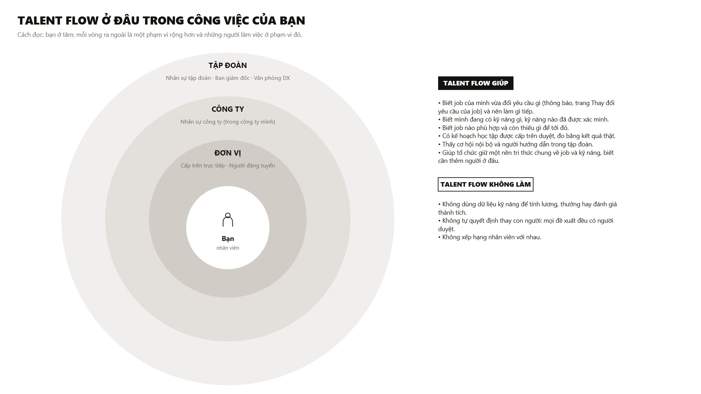
Talent Flow giúp bạn biết mình có kỹ năng gì, job nào phù hợp và cần học gì; giúp tổ chức biết cần thêm người ở đâu. Hệ thống không dùng dữ liệu kỹ năng để tính lương, thưởng, không tự quyết định thay con người và không xếp hạng nhân viên với nhau.
2. Từ chiến lược đến phát triển của từng người
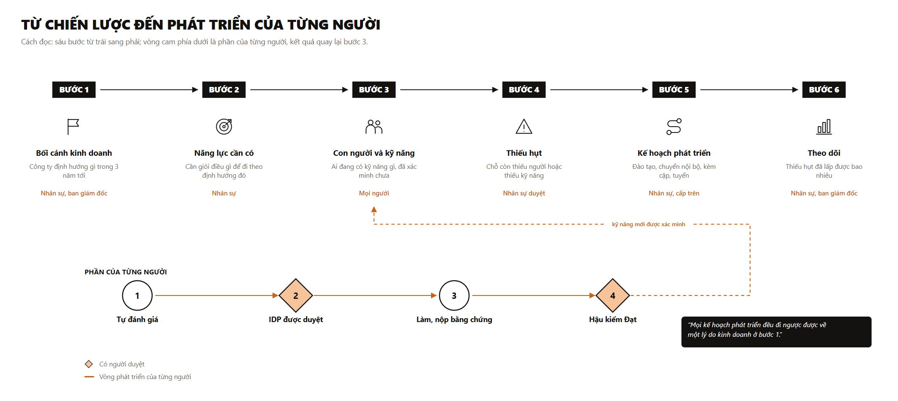
Mọi kế hoạch phát triển đều đi ngược được về một lý do kinh doanh. Phần của bạn là vòng phía dưới: tự đánh giá, IDP được duyệt, làm và nộp bằng chứng, hậu kiểm Đạt. Xem Chuỗi sáu bước.
3. Mỗi vai trò làm gì
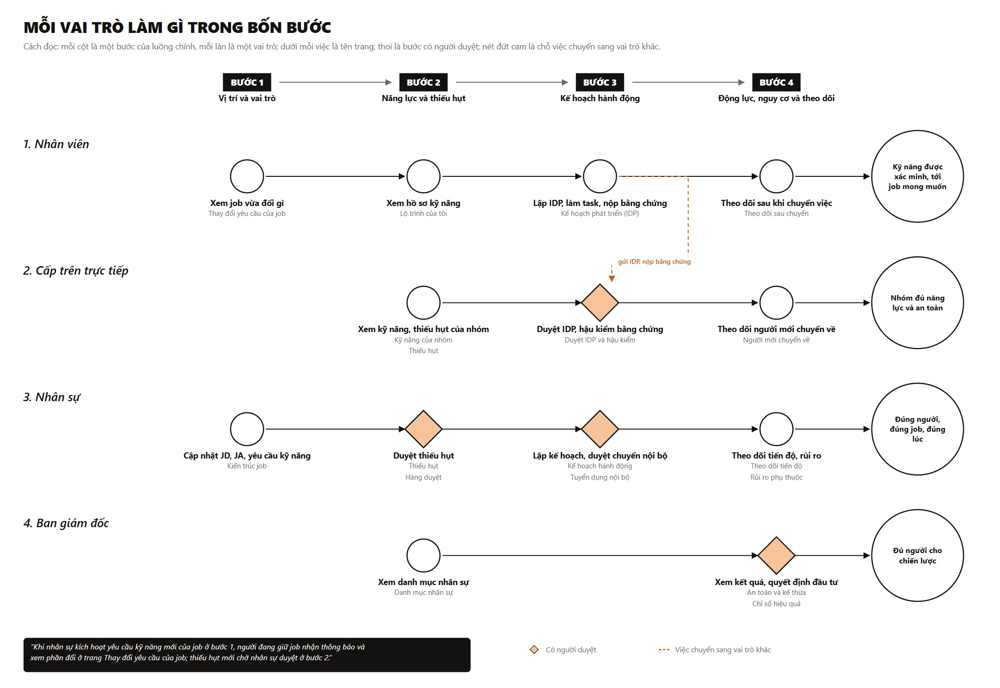
Việc của nhân viên chuyển sang cấp trên ở hai chỗ: gửi IDP chờ duyệt và nộp bằng chứng chờ hậu kiểm. Xem Vai trò và những gì bạn thấy, và mục Hôm nay, Tổng quan hoạt động ở phần của từng vai trò.
4. Kế hoạch phát triển cá nhân (IDP)
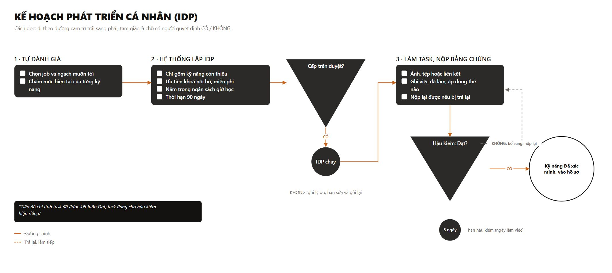
IDP chỉ gồm kỹ năng còn thiếu cho job và ngạch bạn chọn, ưu tiên khoá nội bộ, nằm trong ngân sách giờ học. Tiến độ chỉ tính task đã được kết luận Đạt. Xem Lập IDP và Làm task, nộp bằng chứng.
5. Kỹ năng được xác minh thế nào
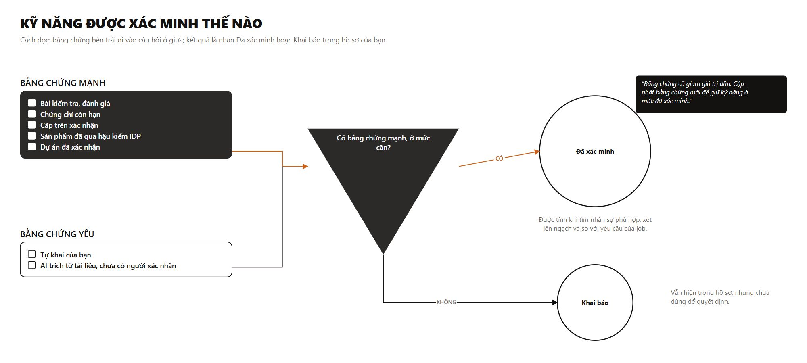
Bằng chứng mạnh là bài kiểm tra, chứng chỉ còn hạn, cấp trên xác nhận, sản phẩm đã qua hậu kiểm, dự án đã xác nhận. Bằng chứng cũ giảm giá trị dần, nên hãy cập nhật khi có kết quả mới. Xem Xem hồ sơ kỹ năng của mình.
6. Tuyển nội bộ: ẩn danh đến vòng trong
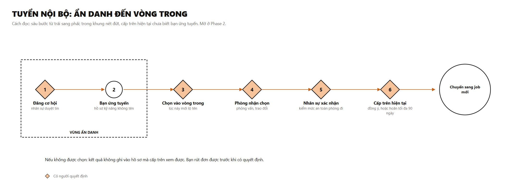
Phòng tuyển chỉ thấy hồ sơ kỹ năng không tên cho tới khi chọn bạn vào vòng trong. Cấp trên hiện tại chỉ được đồng ý hoặc đề nghị hoãn có lý do, tối đa 90 ngày. Nếu không được chọn, kết quả không ghi vào hồ sơ mà cấp trên xem được. Xem Ứng tuyển nội bộ.
7. Dữ liệu kỹ năng đi từ đâu tới đâu
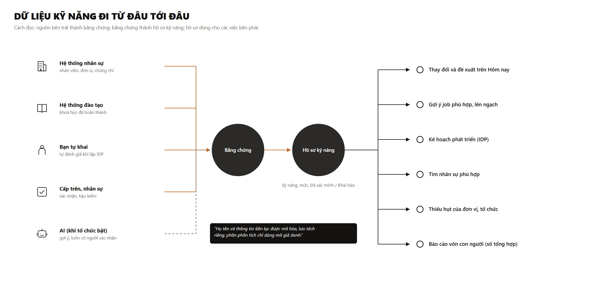
Dữ liệu đến từ hệ thống nhân sự, hệ thống đào tạo, phần bạn tự khai, xác nhận của cấp trên và nhân sự, và AI khi tổ chức bật (luôn có người xác nhận). Báo cáo cho ban giám đốc chỉ dùng số tổng hợp.
8. Dữ liệu của bạn được bảo vệ thế nào
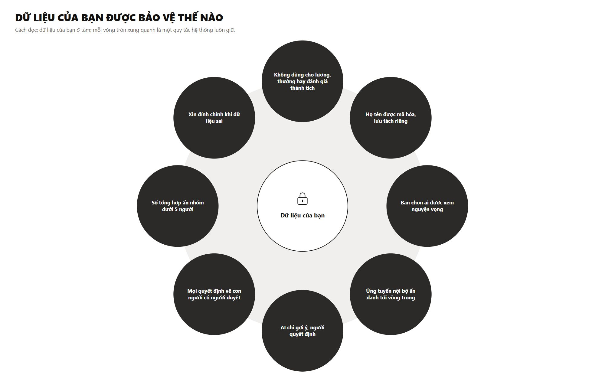
Họ tên được mã hóa và lưu tách khỏi dữ liệu phân tích; bạn chọn ai được xem nguyện vọng; mọi quyết định về con người có người duyệt và được ghi lại. Xem Nguyên tắc sử dụng dữ liệu và Quy định.
Bắt đầu
Workspace: một hệ thống, nhiều tổ chức
Talent Flow chạy một lõi chung cho nhiều tổ chức. Mỗi tổ chức là một workspace: dữ liệu, ngôn ngữ, quy định, khung kỹ năng và tính năng riêng. Bạn đăng nhập vào workspace của tổ chức mình và chỉ thấy dữ liệu của workspace đó.
| Workspace | Ngôn ngữ | Điểm riêng |
|---|---|---|
| Toho Gas (Nhật Bản) | Tiếng Nhật, tiếng Việt | Triển khai theo phase (đang ở Phase 1), điều chuyển định kỳ và biệt phái, an toàn theo luật Nhật, chỉ số công bố vốn con người, Nhân lực DX |
| Tập đoàn BRG (Việt Nam) | Tiếng Việt, tiếng Anh | Nhiều pháp nhân: hồ sơ qua công ty khác cần người lao động đồng ý; lao động tuyến đầu theo mùa; nhiều khung kỹ năng quốc gia và quốc tế; quyền dữ liệu cá nhân. Xem Phần 6 |
Trang và mục menu của một tính năng chỉ hiện khi workspace bật tính năng đó. Vì vậy menu của hai workspace khác nhau dù cùng vai trò. Đổi workspace hay bật tính năng do quản trị dự án làm trong cấu hình, người dùng không phải cài đặt gì.
Vai trò và những gì bạn thấy
Menu bên trái chỉ hiện những bước và trang vai trò của bạn được dùng. Mọi vai trò dùng cùng bốn bước; vai trò khác nhau ở phạm vi. Nhân sự công ty con chỉ thấy người của công ty mình; ban giám đốc chỉ thấy số tổng hợp. Ma trận đầy đủ ở Phần 7.
| Vai trò | Dùng chính |
|---|---|
| Nhân viên | Lộ trình của tôi, Nghề nghiệp và nguyện vọng, Lên ngạch tiếp theo, Đãi ngộ khi phát triển, Mentor nội bộ, Luyện phỏng vấn cùng AI, Kế hoạch phát triển (IDP), Tuyển dụng nội bộ, Theo dõi sau chuyển |
| Cấp trên trực tiếp | Hôm nay của đơn vị, Kỹ năng của nhóm, Tìm nhân sự phù hợp, Duyệt IDP và hậu kiểm, phản hồi đơn tuyển nội bộ, checklist 90 ngày; cộng các trang của chính mình như nhân viên |
| Người đăng tuyển | Đăng cơ hội nội bộ, xem ứng viên không tên, chọn vào vòng trong |
| Nhân sự công ty | Như nhân sự tập đoàn, trong phạm vi công ty mình |
| Nhân sự tập đoàn | Cả bốn bước ở phạm vi tổ chức; Nền tri thức và thiết lập (bối cảnh, hàng duyệt, dữ liệu); kiến trúc job, điều chuyển định kỳ, khung theo ngạch, Chỉ số hiệu quả |
| Ban giám đốc | Danh mục nhân sự, An toàn và kế thừa, Chỉ số hiệu quả (số tổng hợp) |
| Văn phòng DX | Từ điển kỹ năng DX, tab Nhân lực DX |
| Quản trị | Thiết lập dữ liệu, Quản trị, Nhịp vận hành |
Hai sơ đồ dưới cho thấy việc đi qua các vai trò thế nào. Ký hiệu ◆ là bước có người quyết định.
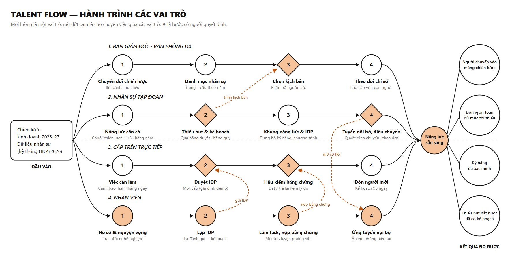
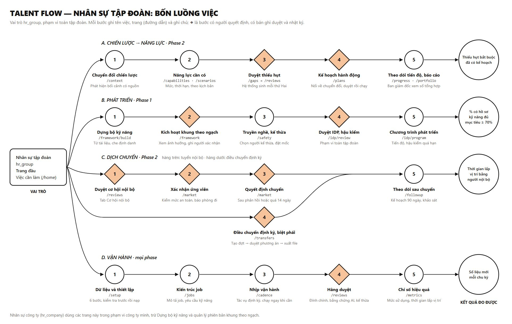
Tổng quan hoạt động — một tờ A3 cho từng vai trò
Talent Flow dùng cách làm A3 của Toyota: mọi điều cần biết để quyết định nằm trên một tờ khổ A3 ngang (297×420 mm), đọc từ trái sang phải, trên xuống dưới. Cột trái là hiểu (bối cảnh, hiện trạng, mục tiêu, phân tích), cột phải là làm và theo dõi (đối sách, kế hoạch, theo dõi). Mỗi ô trả lời một câu hỏi, có nguồn số liệu, và tờ có người phụ trách và ngày.
- Trong ứng dụng: nút Tổng quan ở phần Lối tắt của trang Hôm nay (đường dẫn /a3). Mỗi vai trò thấy tờ của mình, tên tờ là tiêu đề trang: nhân viên — Phát triển của tôi; cấp trên — Đơn vị của tôi; nhân sự — Năng lực tổ chức; ban giám đốc — Danh mục nhân sự. Dải đen dưới tiêu đề là câu kết luận tính từ số liệu (ví dụ “Còn 2 kỹ năng nữa để lên ngạch kế tiếp; IDP đạt 33%”). Bấm Mở chi tiết ở mỗi ô để làm việc ở màn hình riêng; bấm In khổ A3 ngang để in hoặc lưu PDF.
- Khi giao diện tiếng Nhật, các ô mang tên quen thuộc của tờ A3 kiểu Nhật (bối cảnh, hiện trạng, mục tiêu, phân tích nguyên nhân, đối sách, kế hoạch thực hiện, theo dõi).
- Số liệu lấy lúc mở trang, chỉ tính kỹ năng Đã xác minh; ở số tổng hợp, ô dưới 5 người được ẩn.
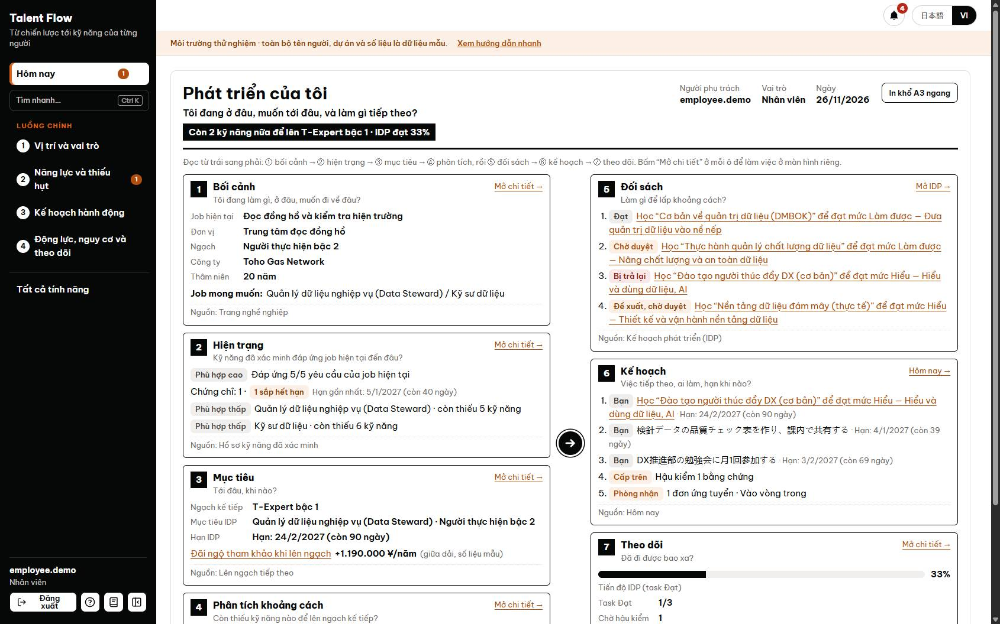
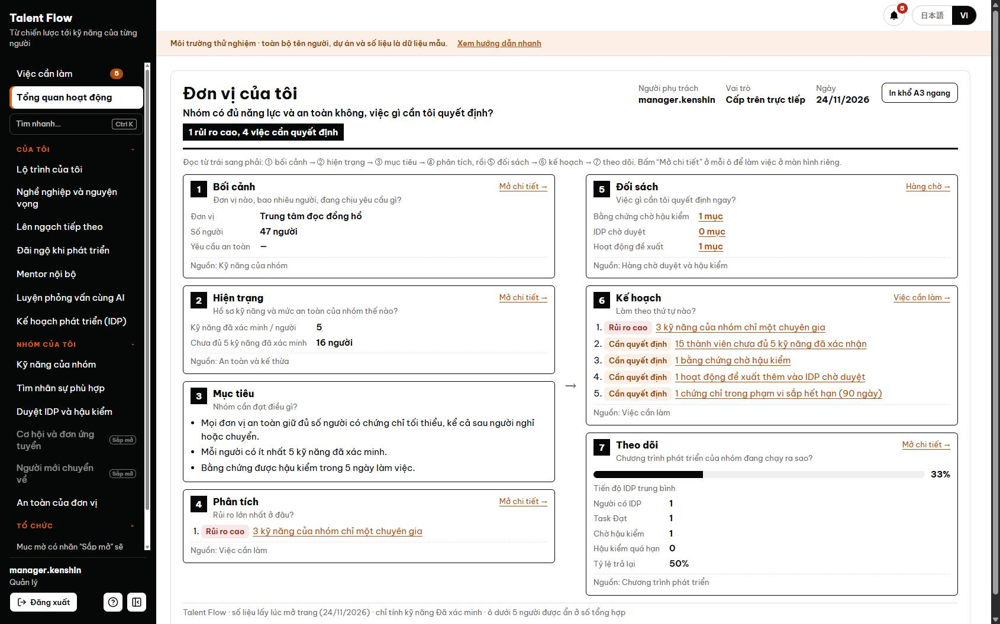
Tờ A3 hướng dẫn. Mỗi vai trò có một tờ tóm tắt cách dùng hệ thống, in được để dán cạnh bàn làm việc: ① vai trò và mục tiêu, ② luồng việc (◆ là bước bạn quyết định), ③ màn hình chính, ④ quyết định và tiêu chí, ⑤ quy tắc hệ thống luôn giữ, ⑥ thường gặp và liên hệ.
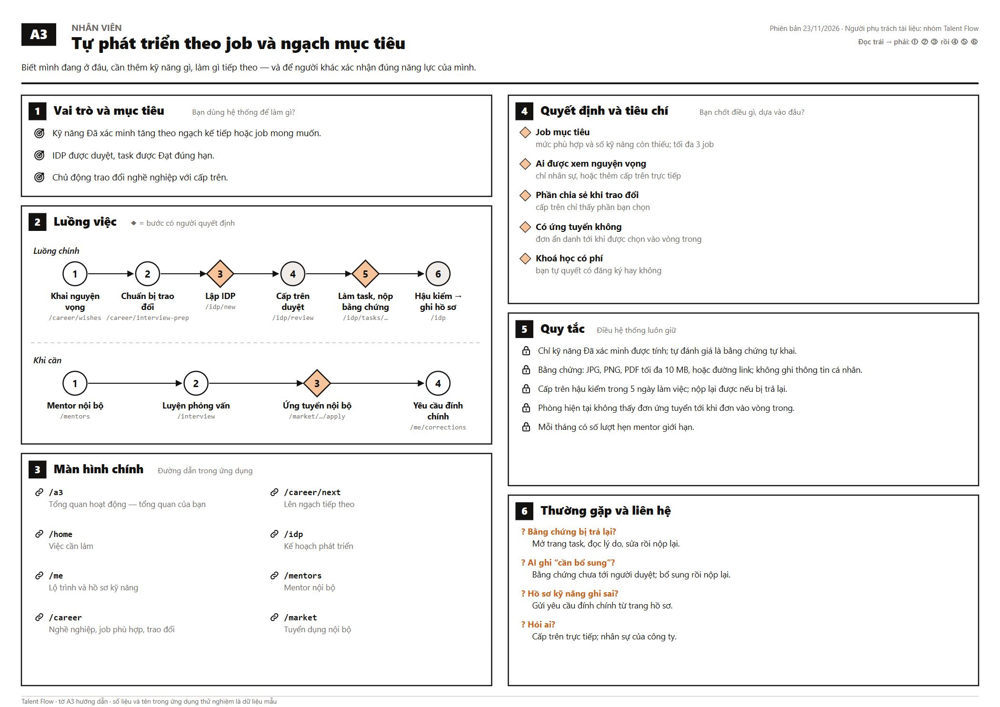
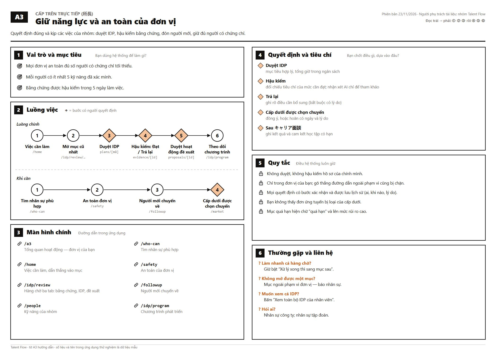
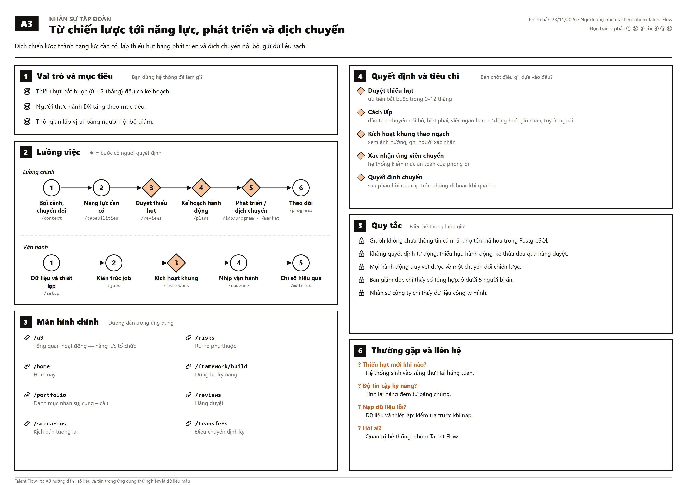
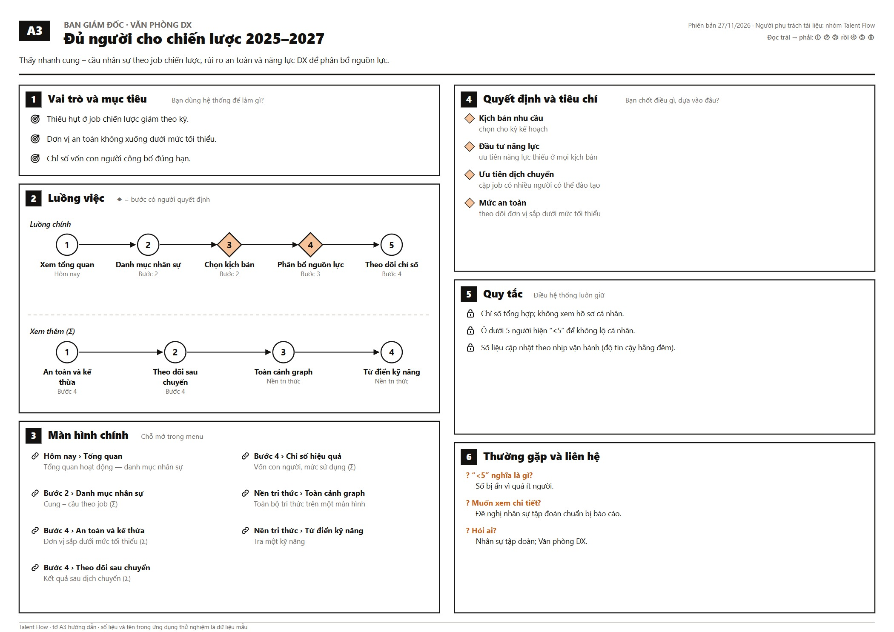
Tri thức của doanh nghiệp: ontology và các luồng làm giàu
Lõi của Talent Flow là tri thức của doanh nghiệp, được sắp thành các danh mục có cấu trúc (ontology, taxonomy): chiến lược cần năng lực nào, năng lực do job nào gánh, job cần kỹ năng gì ở ngạch nào, kỹ năng học bằng gì. Mọi màn hình — hồ sơ kỹ năng, IDP, thiếu hụt, tuyển nội bộ, danh mục nhân sự — đều đọc từ lõi này. Lõi càng đầy và đúng, gợi ý của hệ thống càng sát.
| Vòng tri thức | Gồm | Ví dụ trong dữ liệu mẫu |
|---|---|---|
| Bối cảnh kinh doanh và năng lực | Phát hiện bối cảnh, chuyển đổi chiến lược, năng lực tổ chức, dòng giá trị, kịch bản, tín hiệu | 18 phát hiện, 9 chuyển đổi chiến lược, 14 năng lực, lấy từ kế hoạch kinh doanh và báo cáo vốn con người |
| Job và tổ chức | Job và bản mô tả công việc, ngạch, khung theo ngạch, vị trí, đơn vị, công ty, mức tối thiểu người có chứng chỉ, nhu cầu nhân lực | 23 job có mô tả chi tiết, 8 ngạch, 24 đơn vị |
| Kỹ năng | Kỹ năng, nhóm kỹ năng, thang mức, chứng chỉ, học liệu, kỹ năng liền kề | 107 kỹ năng (theo Chuẩn kỹ năng số DSS và bộ kỹ năng ngành), 18 chứng chỉ, 26 học liệu |
Dữ liệu về từng người (bằng chứng kỹ năng, job mục tiêu, thiếu hụt, đơn ứng tuyển) nằm riêng và chỉ nối vào lõi bằng một mã ẩn danh. Họ tên, email, ngày sinh được mã hóa ở kho riêng, không bao giờ nằm trong tri thức của doanh nghiệp. Vì vậy tri thức có thể dùng chung, rà soát và cải tiến mà không lộ thông tin cá nhân.
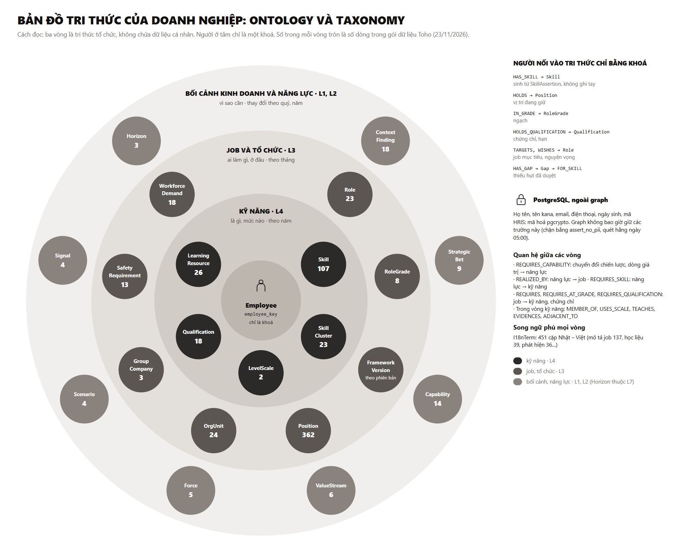
Mỗi vai trò làm giàu tri thức qua việc hằng ngày. Không cần nhập thêm gì riêng: chính các thao tác thường ngày làm lõi dày lên. Ký hiệu ◆ là bước có người quyết định; không đề xuất nào của hệ thống hay AI có hiệu lực trước bước đó.
| Vai trò | Việc hằng ngày | Tri thức được làm giàu |
|---|---|---|
| Nhân viên | Tự đánh giá khi lập IDP, tự khai kỹ năng, nộp bằng chứng task, đặt job mục tiêu và nguyện vọng | Bằng chứng kỹ năng ở mức Khai báo; tổ chức biết ai muốn phát triển theo hướng nào |
| Cấp trên | Ghi nhận bằng chứng của cấp dưới, ◆ duyệt IDP, ◆ hậu kiểm bằng chứng | Kỹ năng Đã xác minh — loại dữ liệu được dùng khi tìm người, chọn mentor, xét lên ngạch |
| Nhân sự | Sửa job và mô tả job, chấp nhận đề xuất kỹ năng, dựng bộ kỹ năng từ tài liệu, ◆ kích hoạt khung theo ngạch, nạp bối cảnh và năng lực, nhập nhu cầu nhân lực, ◆ duyệt thiếu hụt | Từ điển kỹ năng, khung job, khung theo ngạch có phiên bản, chuỗi chiến lược → năng lực → job → kỹ năng |
| Văn phòng DX | Thêm kỹ năng liền kề (kỹ năng dễ chuyển sang nhau) ở Kiến trúc job | Gợi ý học bắt đầu từ kỹ năng người đó đã giỏi |
| Ban giám đốc | Xem danh mục nhân sự, chỉ số; định hướng chiến lược | Kế hoạch kinh doanh được nhân sự ghi thành bối cảnh và chuyển đổi chiến lược |
| Hệ thống | Hằng đêm tính lại độ tin cậy kỹ năng; hằng tuần đề xuất thiếu hụt; hằng ngày kiểm chỗ tri thức còn thiếu (job chưa có yêu cầu kỹ năng, năng lực chưa có job gánh) | Hồ sơ kỹ năng luôn cập nhật; báo nhân sự chỗ cần bổ sung |
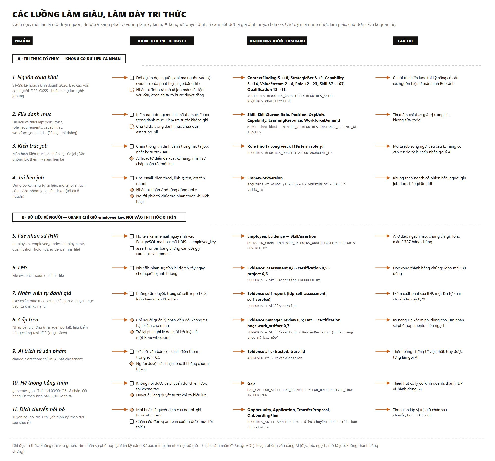
- Tài liệu sẵn có thành khung kỹ năng: ở Nền tri thức và thiết lập → Dựng bộ kỹ năng từ tài liệu, mô tả công việc, phân tích công việc hay mẫu ticket được che thông tin cá nhân, rồi thành gợi ý kỹ năng có trích dẫn. Nhân sự chọn từng dòng; khung chỉ có hiệu lực khi người phía tổ chức xác nhận (xem cách làm).
- Kỹ năng mới vào từ điển qua file ở Dữ liệu và thiết lập, thường gắn nhãn Kỹ năng mới nổi; dựng bộ kỹ năng chỉ chọn kỹ năng đã có trong từ điển.
- Không lưu đè: khi đổi khung theo ngạch, bản cũ được đóng lại và giữ làm lịch sử; người giữ job và người có IDP nhắm job đó nhận thông báo.
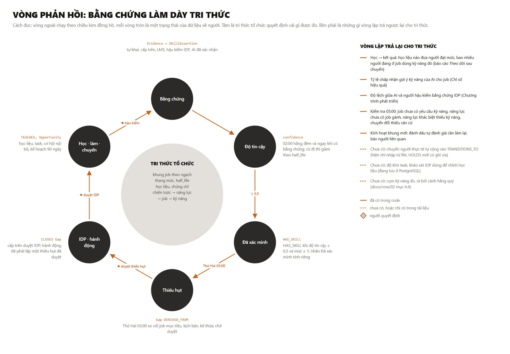
Một số tính năng chỉ đọc tri thức, không ghi thêm: Tìm nhân sự phù hợp (chỉ tin kỹ năng Đã xác minh), Mentor nội bộ, Luyện phỏng vấn cùng AI (buổi luyện không thành bằng chứng kỹ năng), Từ điển kỹ năng (tra từng kỹ năng: thang mức, job cần, cách học). Xem toàn bộ tri thức ở Nền tri thức và thiết lập → Toàn cảnh graph tri thức. Muốn xem các nút nối với một nút (1–3 bước), chọn nút đó rồi bấm Quanh nút này, hoặc bấm đúp vào nút; mỗi nhánh một màu, điểm nóng tô đỏ.
Bố cục màn hình
- Menu bên trái có ít mục: Hôm nay, bốn bước của luồng chính (có số 1–4), Nền tri thức và thiết lập và Tất cả tính năng. Menu không đổi theo ngày: cùng vai trò thì luôn thấy cùng các mục. Số màu cam cạnh một bước là số việc đang chờ ở bước đó. Bước không có trang cho vai trò của bạn thì không hiện; số của các bước còn lại giữ nguyên.
- Trang của một bước: bấm tên bước để mở. Trang ghi câu hỏi của bước, việc đang chờ ở bước, và một thẻ cho mỗi trang của bước. Khi bạn đang ở trong một bước, menu hiện luôn các trang của bước đó ngay bên dưới.
- Phạm vi: cấp trên và người đăng tuyển thấy hai nút Tôi và Nhóm ở góc phải trang bước. Tôi là việc của chính bạn; Nhóm là việc của đơn vị bạn phụ trách. Hệ thống nhớ lựa chọn gần nhất.
- Biết mình đang ở đâu: đầu mỗi trang có dòng vị trí, ví dụ 2 · Năng lực và thiếu hụt → Thiếu hụt, và dải bốn bước; bấm một bước trên dải để sang bước đó.
- Tất cả tính năng liệt kê mọi trang bạn mở được, xếp theo bốn bước; gõ vào ô lọc để tìm theo tên.
- Tìm nhanh: bấm Ctrl K (máy Mac: ⌘ K) hoặc ô Tìm nhanh để tìm trang theo tên; nhân sự và cấp trên tìm được cả job, kỹ năng, năng lực. Chưa gõ thì hiện các trang vừa mở.
- Ghim: rê chuột vào một trang trong menu của bước và bấm ☆ để đưa trang đó lên nhóm Đã ghim ở đầu menu. Nút có hình thu gọn bảng bên (cạnh nút Đăng xuất, dưới tên tài khoản) ẩn menu để có thêm chỗ cho nội dung; nút ☰ Menu ở góc trên mở lại.
- Góc trên bên phải: chuông thông báo và nút đổi ngôn ngữ.
- Dải màu cam ở đầu trang nhắc đây là môi trường thử nghiệm với dữ liệu mẫu.
- Nút có dấu hỏi dưới tên tài khoản mở lại phần giới thiệu nhanh cho vai trò của bạn.
- Nút hình quyển sách cạnh nút dấu hỏi mở Từ điển mã: tra nhanh các mã viết tắt như TB1, R-TG-HOAN.
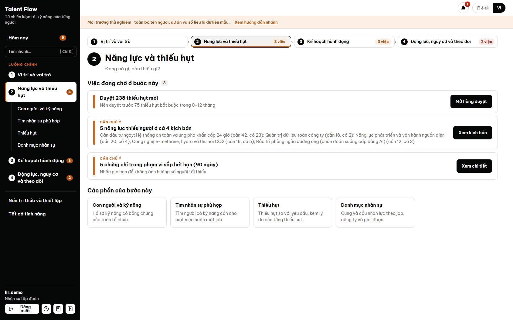
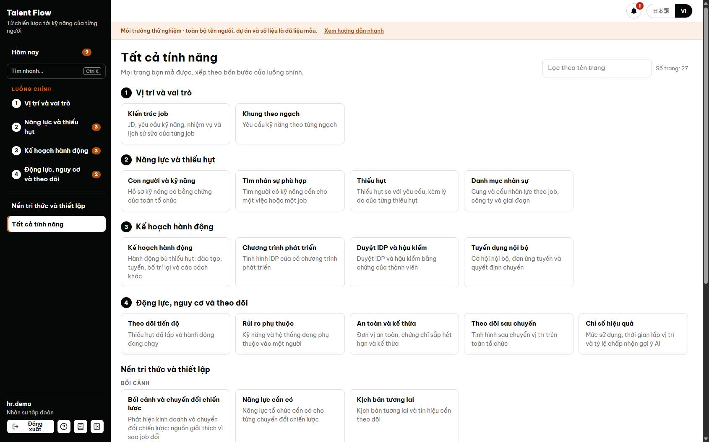
Trang Hôm nay
Hôm nay là trang mở đầu của mọi vai trò. Hệ thống tự tổng hợp từ dữ liệu hằng ngày theo quy tắc; trang không dùng AI.
- Dải bốn bước ở đầu trang: tên bước, câu hỏi của bước và số việc đang chờ ở bước đó.
- Chờ bạn quyết định: đơn, đề xuất và bằng chứng đang chờ bạn duyệt. Phần này chỉ hiện khi có việc.
- Thay đổi và đề xuất: điều vừa đổi hoặc sắp đến hạn, xếp theo mức Rủi ro cao → Cần chú ý → Thông tin. Mục rủi ro cao luôn hiện đủ; khi danh sách dài, phần còn lại mở bằng nút Hiện thêm.
- Mỗi mục ghi bước của nó (ví dụ “2 Năng lực và thiếu hụt”) và có một nút đi thẳng tới chỗ làm tiếp.
- Lối tắt: Tổng quan, Tất cả tính năng, và lối tắt riêng của vai trò (ví dụ Nhịp vận hành của nhân sự).
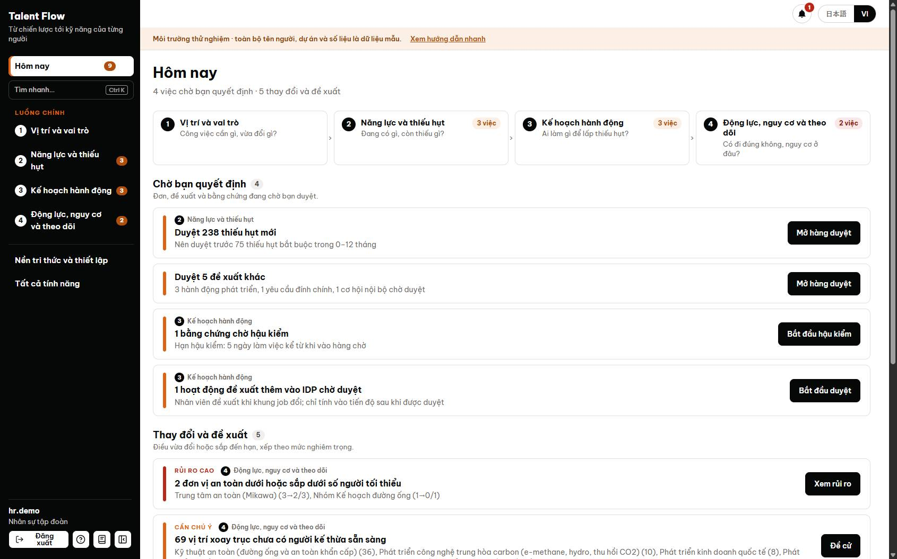
Từ điển mã và nút ⓘ
Nhiều trang có mã viết tắt như TB1, TF-2, R-TG-HOAN, IDP-C4A19E02. Bấm ⓘ cạnh mã để xem mã thuộc nhóm nào, các phần của mã nghĩa là gì, kèm tên thật nếu trang đã có. Trong khung giải thích, bấm Mở Từ điển mã để tra thêm.
- Mở Từ điển mã: bấm nút hình quyển sách dưới tên tài khoản, hoặc liên kết trong khung giải thích. Mọi vai trò đều mở được.
- Gõ mã vào ô Mã cần tra đúng như trên màn hình. Hệ thống cho biết nhóm mã, ý nghĩa, dạng mã, và tên thật nếu mã có trong danh mục (công ty, đơn vị, job, kỹ năng, ngạch, chứng chỉ).
- Phía dưới là bảng các nhóm mã theo loại: tổ chức và con người; chiến lược và chuỗi sáu bước; kỹ năng, job, ngạch, chứng chỉ; quy trình (mã hệ thống tự sinh); giai đoạn; mã trong tài liệu dự án. Bấm một mã ở cột Ví dụ để tra nhanh. Cuối trang là danh sách mã công ty, mã ngạch và vai trò người dùng đang dùng.
| Mã | Nghĩa | Ví dụ |
|---|---|---|
| TF-số | Phát hiện bối cảnh kinh doanh của Toho (Toho + Finding) | TF-2: đồng hồ thông minh tự động hóa phần lớn việc đọc đồng hồ |
| TB + số | Chuyển đổi chiến lược của Toho (Toho + Bet) | TB1: chuyển người đọc đồng hồ, văn phòng sang an toàn và dữ liệu |
| TC-tên | Năng lực tổ chức | TC-DATA: quản trị dữ liệu toàn công ty |
| TS1–TS4 | Kịch bản tương lai | TS1: đồng hồ thông minh phổ cập nhanh, chính sách mạnh |
| H1 · H2 · H3 | Giai đoạn 0–12, 12–24, 24–36 tháng (màn hình thường ghi khoảng tháng) | H1 |
| TG · TGN · TGLS | Công ty trong tập đoàn | TGN: Toho Gas Network |
| R-TG-tên | Job | R-TG-HOAN: kỹ thuật an toàn đường ống, khẩn cấp |
| G-S1 … G-M2 | Ngạch: S người thực hiện, L T-Leader, E T-Expert, M quản lý | G-S2: người thực hiện bậc 2 |
| DSS-…, EN-… | Kỹ năng: chuẩn kỹ năng số DSS; kỹ năng ngành năng lượng | DSS-DA-SA-01, EN-FLD-04 |
| IDP- và 8 ký tự | Kế hoạch phát triển cá nhân | IDP-C4A19E02 |
| E- và 8 ký tự | Mã giả danh nhân viên, thay họ tên trong dữ liệu phân tích | E-3F9A1C7B |
Mã có đuôi là chữ số và chữ cái ngẫu nhiên (IDP-, OPP-, D-…) do hệ thống tự sinh khi tạo, không cần nhớ. Mã trong ngoặc như (BR-09), (FR-301) là số hiệu yêu cầu trong tài liệu dự án, để đội triển khai đối chiếu.
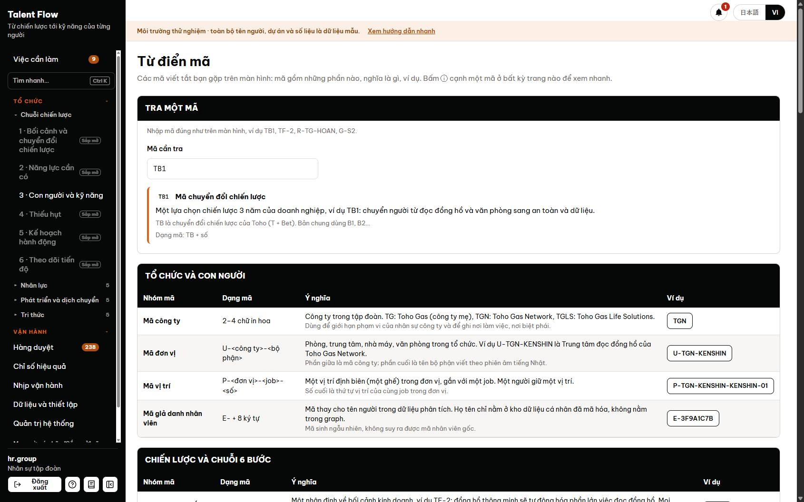
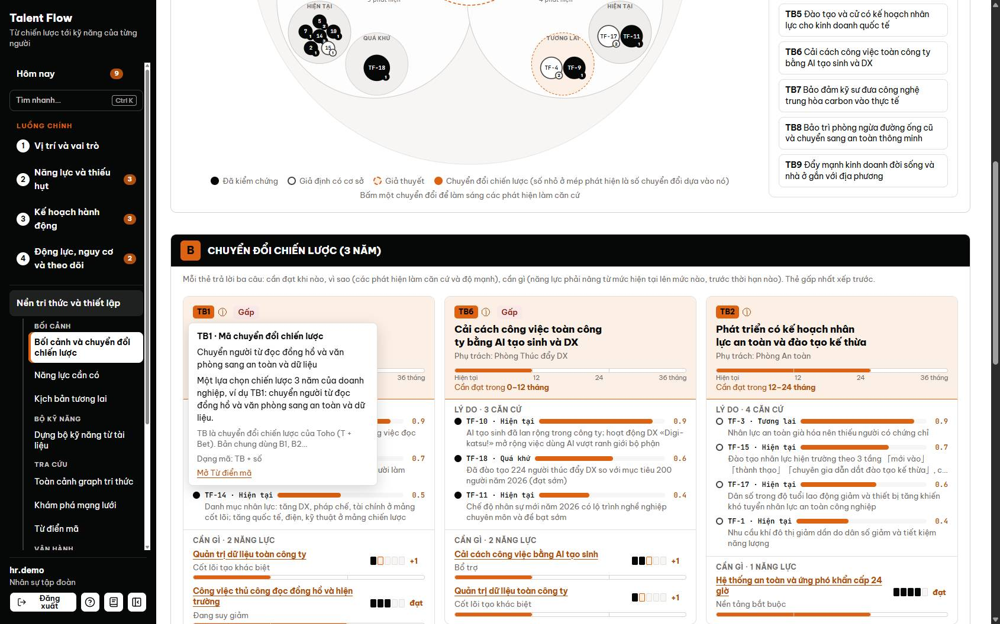
Từ điển kỹ năng
Từ điển kỹ năng liệt kê mọi kỹ năng tổ chức đang dùng, xếp theo nhóm. Mỗi kỹ năng có một trang riêng: thang mức và nghĩa của từng mức, job nào cần kỹ năng ở mức nào, cách học, kỹ năng gần. Mọi vai trò đều mở được. Trang chỉ để đọc; kỹ năng mới vẫn vào từ điển qua file ở Dữ liệu và thiết lập (xem Tri thức của doanh nghiệp).
- Mở Nền tri thức và thiết lập → Từ điển kỹ năng (nhóm Tra cứu).
- Tìm kỹ năng: gõ tên hoặc mã vào ô tìm, lọc theo trạng thái (Ổn định, Mới nổi, Giảm dần), hoặc đánh dấu Chỉ kỹ năng có thang riêng. Bấm một nhóm ở cột bên trái để chỉ xem kỹ năng của nhóm đó.
- Bấm tên kỹ năng để mở trang của kỹ năng. Tên kỹ năng ở hồ sơ (Lộ trình của tôi) và ở tab Kỹ năng kề cận của trang Kiến trúc job cũng bấm được.
Trang của một kỹ năng gồm:
- Thang mức của kỹ năng này: kỹ năng có thang riêng (ví dụ thang việc hiện trường 0–4) thì cả trang dùng thang đó; không có thì dùng thang chung 1–5. Nếu bạn đã có mức được xác nhận ở kỹ năng này, dòng tương ứng ghi Mức của bạn.
- Job cần kỹ năng này: mức yêu cầu chung, mức độ cần (Bắt buộc, Nên có, Có thì tốt) và mức theo ngạch lấy từ khung đang dùng.
- Cách học: học liệu xếp theo thứ tự khoá nội bộ, miễn phí, có phí; mỗi học liệu ghi đạt tới mức nào. Kỹ năng chỉ tích luỹ qua công việc thì trang ghi rõ.
- Kỹ năng gần: đã có kỹ năng này thì học các kỹ năng gần nhanh hơn, và ngược lại; kèm mức độ gần và căn cứ.
- Năng lực tổ chức dựa trên kỹ năng này và chứng chỉ liên quan.
- Phân bố trong tổ chức (chỉ nhân sự và cấp trên): số nhân viên đang làm việc theo từng mức đã xác nhận.
Ai thấy số người: cột Người đạt mức 3 trở lên trong Từ điển và bảng phân bố chỉ hiện với nhân sự và cấp trên, tính trong phạm vi của mình (nhân sự tập đoàn: toàn tập đoàn). Nhân viên, người đăng tuyển, quản trị, ban giám đốc và Văn phòng DX vẫn xem được từ điển nhưng không thấy số người. Trang không hiện tên hay mã của từng người.
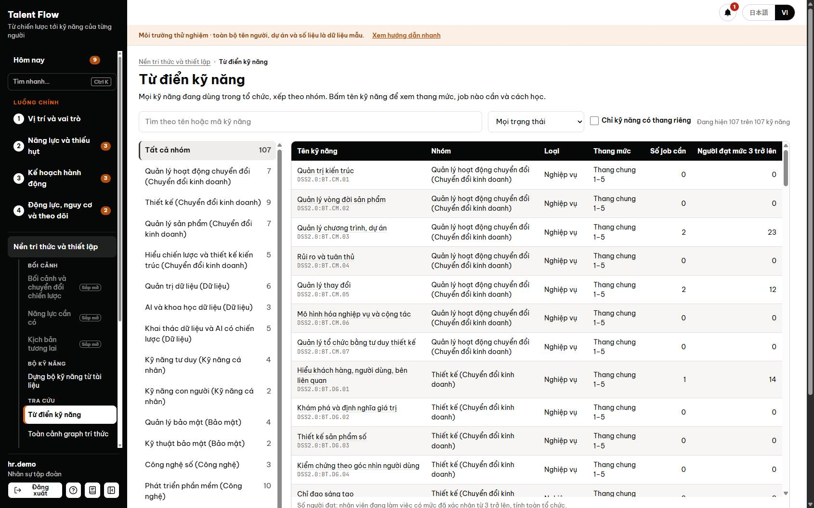
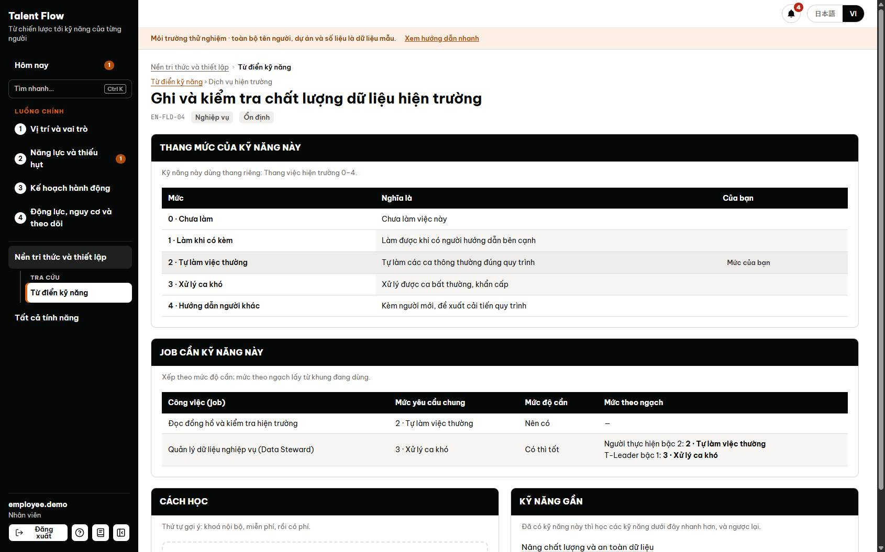
Triển khai theo phase
Hệ thống được mở dần theo hai phase để mỗi người chỉ phải làm quen vài trang mỗi lần, và để dữ liệu kỹ năng đủ tin cậy trước khi dùng cho quyết định bố trí người.
| Phase | Gồm | Dữ liệu được làm đầy |
|---|---|---|
| Phase 1 · Hồ sơ kỹ năng và phát triển cá nhân | Lộ trình của tôi, Nghề nghiệp và nguyện vọng, IDP, Duyệt IDP và hậu kiểm, Con người và kỹ năng, Khám phá mạng lưới, An toàn và kế thừa, Chương trình phát triển, Kiến trúc job, Khung theo ngạch, Yêu cầu đính chính | Job và yêu cầu kỹ năng, mức tự đánh giá, bằng chứng đã hậu kiểm, job mục tiêu, chứng chỉ |
| Phase 2 · Chiến lược và dịch chuyển nội bộ | Bối cảnh, Năng lực cần có, Thiếu hụt, Kế hoạch hành động, Theo dõi tiến độ, Kịch bản, Rủi ro phụ thuộc, Danh mục nhân sự, Tuyển dụng nội bộ, Điều chuyển định kỳ, Theo dõi sau chuyển | Chuyển đổi chiến lược, năng lực, thiếu hụt, kết quả chuyển người |
| Vận hành (mọi phase) | Hàng duyệt, Chỉ số hiệu quả, Nhịp vận hành, Dữ liệu và thiết lập, Quản trị | — |
- Trang của phase chưa mở vẫn nằm trong bước của nó nhưng mờ đi, có nhãn Sắp mở, cả trong menu và trên trang bước. Nhân viên và cấp trên chưa mở được; trang Hôm nay cũng không đưa việc dẫn tới các trang này.
- Nhân sự và quản trị mở được trang của phase sau để chuẩn bị dữ liệu trước (ví dụ soạn bối cảnh và chuyển đổi chiến lược trong Phase 1); đầu trang có dòng nhắc trang chưa mở cho nhân viên.
- Chuyển phase do quản trị hệ thống đổi trong cấu hình của tổ chức; người dùng không phải cài đặt gì.


Đổi ngôn ngữ
- Bấm nút đổi ngôn ngữ ở góc trên bên phải. Nút hiện theo ngôn ngữ workspace có: Toho Gas có 日本語 và VI; BRG có VI và EN (tiếng Anh). Lựa chọn được nhớ cho lần sau.
- Nhãn, nút, thông báo và dữ liệu có bản song ngữ (tên job, mô tả job, đơn vị, kỹ năng, phát hiện, chỉ số công bố vốn con người) đổi ngay theo ngôn ngữ đã chọn. Giao diện tiếng Việt dùng thuật ngữ tiếng Việt: buổi trao đổi nghề nghiệp, tuyển nội bộ, làm thêm nội bộ, biệt phái, điều chuyển định kỳ, nhân lực DX, công bố vốn con người, theo luật và chuẩn nội bộ.
- Ở giao diện tiếng Việt, họ tên người Nhật hiện dạng chữ Latin (ví dụ Hattori Yuto). File xuất ra luôn giữ tên gốc. Thanh bên và ô Người phụ trách hiện tên đăng nhập (ví dụ manager.kenshin); họ tên của người dùng đó (ví dụ Yamamoto Yu) hiện ở hồ sơ và trong mạng lưới.
Hệ thống không hiện câu trộn hai ngôn ngữ. Nội dung chưa có bản dịch (ví dụ ghi chú do người dùng tự nhập) được giữ nguyên như khi nhập.
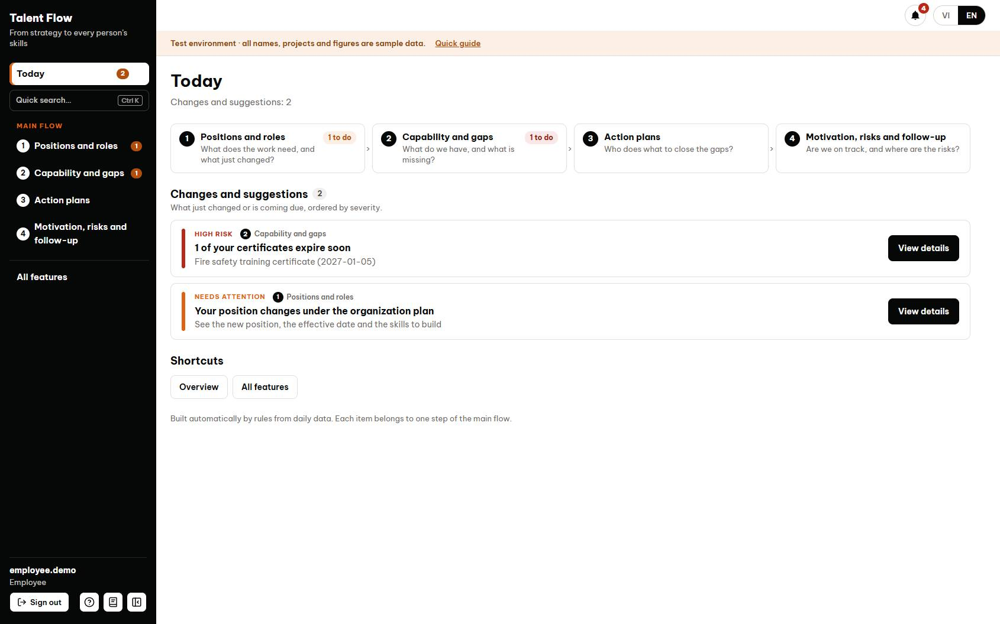
Thông báo
Chuông ở góc trên báo IDP được duyệt hoặc từ chối, task Đạt hoặc bị trả lại, bằng chứng chờ hậu kiểm, IDP chờ duyệt. Bấm một thông báo để đi tới đúng trang; bấm Đánh dấu đã đọc để xoá số chưa đọc.
Đồng ý sử dụng dữ liệu
Lần đầu đăng nhập, hoặc khi tổ chức thêm bên được xem dữ liệu, một khung đồng ý hiện ở đầu trang với nội dung theo ngôn ngữ bạn chọn và danh sách ai được xem. Bấm Tôi đồng ý để tiếp tục. Muốn rút đồng ý, liên hệ bộ phận nhân sự. Ở workspace BRG, bạn tự chọn công ty nào được xem hồ sơ và tự rút đồng ý ở trang Chia sẻ hồ sơ giữa các công ty.
Hướng dẫn cho nhân viên
Hôm nay của bạn
Đường dẫn: Hôm nay ở đầu menu (trang mở đầu sau khi đăng nhập). Phần Thay đổi và đề xuất gom những việc về chính bạn, xếp theo mức: Rủi ro cao → Cần chú ý → Thông tin. Mỗi mục ghi bước của nó và có nút đi thẳng tới trang làm việc.
- Chứng chỉ của bạn sắp hết hạn (rủi ro cao): gia hạn trước khi ảnh hưởng số người tối thiểu của đơn vị.
- Cam kết sau buổi trao đổi nghề nghiệp đến hạn: việc bạn đã nhận làm sau buổi trao đổi với cấp trên.
- Mốc kiểm tra, khảo sát sau chuyển đến hạn: khi bạn vừa chuyển sang job mới.
- Cơ hội nội bộ phù hợp với bạn (thông tin, khi tuyển dụng nội bộ đã mở ở Phase 2).
Task của IDP (việc cần làm, bị trả lại, chờ hậu kiểm) nằm ở trang Kế hoạch phát triển (IDP), xem mục 5. Không có việc nào thì trang ghi “Không có việc nào đang chờ bạn”.
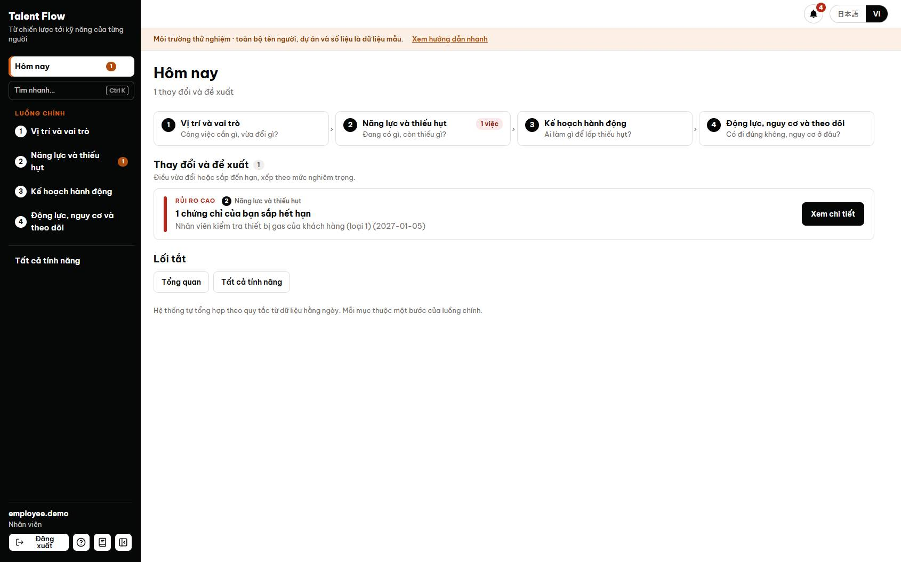
Tổng quan hoạt động: Phát triển của tôi
Đường dẫn: Hôm nay → Tổng quan (phần Lối tắt). Tờ A3 trả lời câu “Tôi đang ở đâu, muốn tới đâu, và làm gì tiếp theo?” trong bảy ô, đọc từ trái sang phải:
- 1 · Bối cảnh: tôi đang làm gì, ở đâu, muốn đi về đâu?
- 2 · Hiện trạng: kỹ năng đã xác minh đáp ứng job hiện tại đến đâu?
- 3 · Mục tiêu: tới đâu, khi nào?
- 4 · Phân tích khoảng cách: còn thiếu kỹ năng nào để lên ngạch kế tiếp?
- 5 · Đối sách: làm gì để lấp khoảng cách?
- 6 · Kế hoạch: việc tiếp theo, ai làm, hạn khi nào?
- 7 · Theo dõi: đã đi được bao xa?
Mỗi ô có liên kết sang trang chi tiết. Ảnh tờ của nhân viên và cách in khổ A3: xem Tổng quan hoạt động ở phần Bắt đầu.
1Xem hồ sơ kỹ năng của mìnhPhase 1
Đường dẫn: Bước 2 → Lộ trình của tôi
- Xem danh sách kỹ năng, mức hiện tại và độ tin cậy của từng kỹ năng.
- Mở một kỹ năng để xem bằng chứng đứng sau: tự khai, đánh giá, chứng chỉ, dự án, xác nhận của cấp trên.
- Thấy thông tin sai: gửi yêu cầu đính chính. Yêu cầu vào hàng duyệt; bạn theo dõi kết quả ở Yêu cầu đính chính.
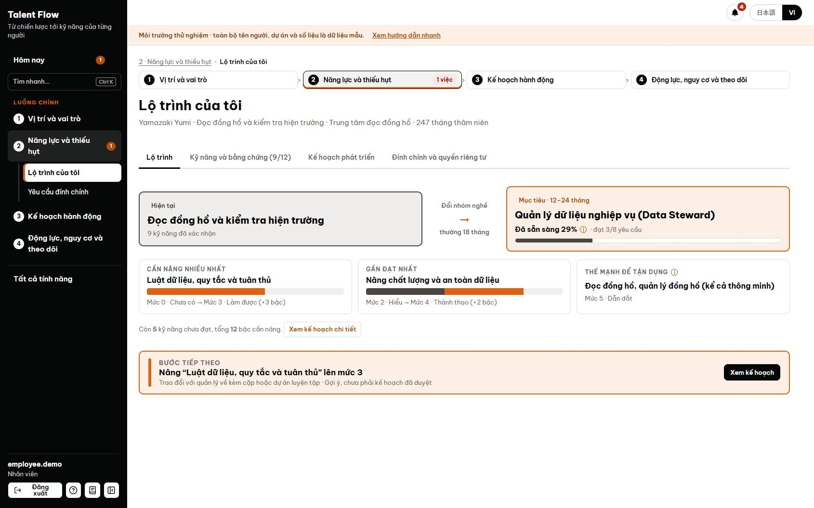
2Tìm job phù hợp và đặt nguyện vọngPhase 1
Đường dẫn: Bước 1 → Nghề nghiệp và nguyện vọng
- Xem Mức đáp ứng job hiện tại và chứng chỉ đang có.
- Ở Job phù hợp trong toàn nhóm, đọc mô tả job, mức sẵn sàng (%), kỹ năng đã có và kỹ năng cần thêm. Dòng "N người đã đi đường này" cho biết đã có bao nhiêu người chuyển theo hướng này.
- Dải tóm tắt đầu trang cho biết ngay: mức đáp ứng job hiện tại, số job mong muốn, cam kết chưa xong (kèm hạn gần nhất bằng chữ) và chứng chỉ cần chú ý.
- Bấm thẻ Khai nguyện vọng nghề nghiệp. Trang riêng đi theo bốn bước: chọn tối đa 3 job (thứ tự chọn là thứ tự ưu tiên) → chọn ai được xem (chỉ nhân sự, hoặc cả cấp trên trực tiếp) → kiểm tra → hoàn tất. Sửa lại được bất cứ lúc nào.
- Về trang nghề nghiệp, với mỗi nguyện vọng xem lộ trình học: khoá học, dự án nội bộ để thực hành, chứng chỉ nên lấy.
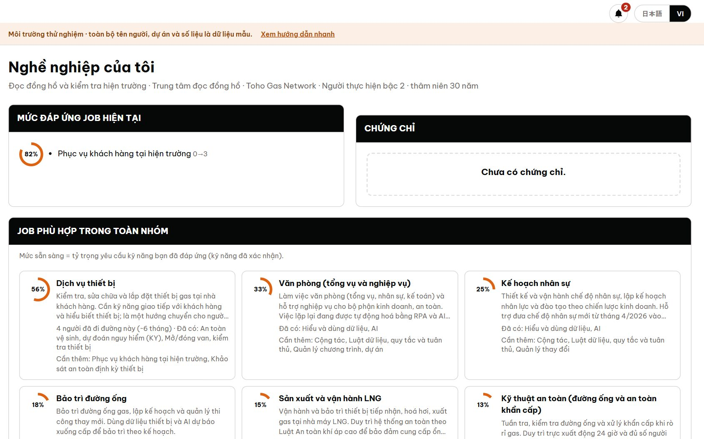
3Chuẩn bị buổi trao đổi nghề nghiệp với cấp trênPhase 1
- Ở trang Nghề nghiệp và nguyện vọng, bấm thẻ chuẩn bị buổi trao đổi nghề nghiệp với cấp trên. Trang riêng đi theo ba bước: chọn phần chia sẻ với cấp trên (kỹ năng mới, job mong muốn, khoảng cách, câu hỏi gợi ý) → kiểm tra (liệt kê rõ phần cấp trên thấy và không thấy) → hoàn tất.
- Cấp trên chỉ thấy phần bạn chọn. Sau buổi trao đổi, cấp trên ghi kết quả và cam kết học tập; cam kết hiện ở trang nghề nghiệp kèm hạn bằng chữ (“còn 38 ngày”).
4Lập kế hoạch phát triển cá nhân (IDP)Phase 1
Đường dẫn: Bước 3 → Kế hoạch phát triển (IDP) → nút Lập IDP (hoặc Đánh giá lại / đổi mục tiêu). Trang lập IDP đi theo ba bước: Chọn mục tiêu và tự đánh giá → Kiểm tra nội dung → Hoàn tất; dải bước ở đầu trang cho biết bạn đang ở đâu.
- Chọn ngạch hiện tại, job mục tiêu và ngạch mục tiêu. Ngạch có dấu ★ có bộ yêu cầu riêng; không có ★ thì dùng yêu cầu chung của job.
- Bấm Gợi ý từ hồ sơ để điền sẵn mức (chỉ điền khi hồ sơ có dữ liệu cho ít nhất một nửa số kỹ năng), rồi kiểm tra lại.
- Chấm mức hiện tại cho từng kỹ năng theo thang của kỹ năng đó; dưới mỗi lựa chọn có mô tả mức. Bấm Lưu nháp nếu cần làm tiếp sau.
- Khi đã chấm đủ, bấm Tiếp tục: kiểm tra nội dung. Màn kiểm tra liệt kê mục tiêu, số kỹ năng chưa đạt và điều xảy ra sau khi gửi. Bấm Gửi và lập IDP, hoặc Quay lại sửa. Hệ thống lập IDP và gửi cấp trên duyệt.
- Trang Kế hoạch phát triển (IDP) là trang tổng quan: dải bước của quy trình (tự đánh giá → lập kế hoạch → duyệt → thực hiện → hậu kiểm → ghi vào hồ sơ, mỗi bước ghi ai phụ trách), dải tóm tắt (trạng thái, tiến độ, số task cần làm, hạn IDP bằng chữ) và bảng Ai đã làm gì (lập, duyệt / từ chối kèm lý do). Xem IDP: các task có giờ học, khoá gợi ý (nội bộ → miễn phí → có phí), mục Để sau (vượt quá 90 ngày) và Khoảng cách tham khảo (kỹ năng không học được qua khoá học).
Đánh giá lại hoặc đổi mục tiêu bao nhiêu lần cũng được. Mỗi lần tạo IDP mới chờ duyệt; task đã Đạt của cùng kỹ năng được giữ.
5Làm task và nộp bằng chứngPhase 1
Mỗi task có màn hình riêng: bấm tên task hoặc nút ở cuối dòng (Bắt đầu, Nộp bằng chứng, Nộp lại). Màn hình task có dải bước của task, tiêu chí của mức cần đạt, lần nộp gần nhất, lịch sử và nút Mục trước / Mục sau để đi qua các task.
- Sau khi IDP được duyệt (có thông báo), mở task và bấm Bắt đầu task.
- Học hoặc thực hành theo task. Khoá có phí: bạn tự quyết có đăng ký hay không.
- Nộp bằng chứng: chọn file ảnh JPG/PNG hoặc PDF (tối đa 10 MB), hoặc dán đường link; thêm ghi chú cho người duyệt (không ghi thông tin cá nhân). Bấm Kiểm tra trước khi nộp; hộp xác nhận tóm tắt task, bằng chứng và điều xảy ra sau khi nộp, rồi bấm Nộp bằng chứng.
- Theo dõi trạng thái: Chờ duyệt → Đạt, hoặc Bị trả lại kèm lý do (nộp lại được). Nếu AI đang bật, bạn thấy nhận xét sơ bộ; người duyệt vẫn là người kết luận.
- Khi task Đạt, trả lời câu hỏi độ khó (1–5) hoặc bấm Bỏ qua. Kỹ năng của task Đạt được ghi vào hồ sơ.

6Ứng tuyển nội bộPhase 2
Đường dẫn: Bước 3 → Tuyển dụng nội bộ
- Ở tab Cơ hội đang mở, xem cơ hội tuyển nội bộ, dự án và việc làm thêm trong nhóm, cùng mức phù hợp của bạn với từng cơ hội.
- Bật Nhận gợi ý để hệ thống đưa cơ hội hợp với bạn lên đầu.
- Bấm Ứng tuyển. Trang ứng tuyển đi theo bốn bước: xem nội dung cơ hội (kỹ năng yêu cầu, kỹ năng còn thiếu, hạn nộp bằng chữ) → lý do ứng tuyển (không bắt buộc) → kiểm tra đơn → hoàn tất. Mỗi bước nhắc rõ: đơn được ẩn danh, phòng tuyển chỉ thấy hồ sơ kỹ năng không tên, cấp trên hiện tại chỉ biết khi đơn được chọn vào vòng trong.
- Theo dõi ở tab Đơn của tôi; mở Lịch sử đơn để xem từng bước và thời điểm. Đơn không được chọn có lý do và kỹ năng nên bổ sung; cấp trên không thấy đơn bị loại. Rút đơn có bước xác nhận vì không hoàn tác được.
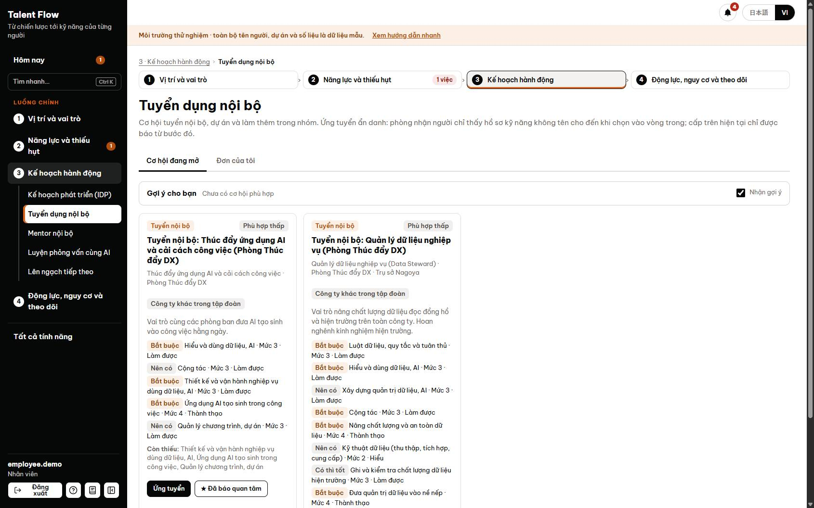
7Sau khi chuyển sang job mớiPhase 2
Đường dẫn: Bước 4 → Theo dõi sau chuyển. Bạn thấy kế hoạch 90 ngày do cấp trên mới theo dõi. Khảo sát ngắn ở ngày 30, ngày 90 và tháng thứ 12 hiện ngay trên trang khi đến hạn; câu trả lời chỉ bạn và nhân sự xem.
8Lên ngạch tiếp theoPhase 1
Đường dẫn: Bước 3 → Lên ngạch tiếp theo, hoặc thẻ “Để lên ngạch tiếp theo, tôi còn thiếu gì?” ở trang Nghề nghiệp và nguyện vọng.
- Trang so kỹ năng của bạn với yêu cầu của ngạch kế tiếp trong job hiện tại. Nếu có hai nhánh (ví dụ T-Leader và T-Expert), chọn nhánh ở ô Ngạch kế tiếp.
- Bảng khoảng cách chỉ tính kỹ năng Đã xác minh. Kỹ năng bạn tự khai đủ mức nhưng chưa có bằng chứng hiện lý do “chưa có bằng chứng xác minh”: cách nhanh nhất là làm task có bằng chứng trong IDP.
- Mỗi dòng có mức ưu tiên (bắt buộc ở ngạch này thì ưu tiên cao) và lý do. Kỹ năng không học qua khoá được sẽ ghi rõ cần giao việc thực tế hoặc thi chứng chỉ.
- Lộ trình gợi ý chia các khoảng cách thành ba giai đoạn trong thời gian một IDP. Bấm Lập kế hoạch phát triển để lập IDP chính thức; IDP vẫn cần cấp trên duyệt.
- Mentor nội bộ: đồng nghiệp đã tự đăng ký làm mentor và có kỹ năng Đã xác minh bạn đang cần. Bấm Mời trao đổi để gửi lời mời. Muốn làm mentor, đánh dấu Tôi sẵn sàng làm mentor nội bộ; bỏ đánh dấu bất cứ lúc nào.
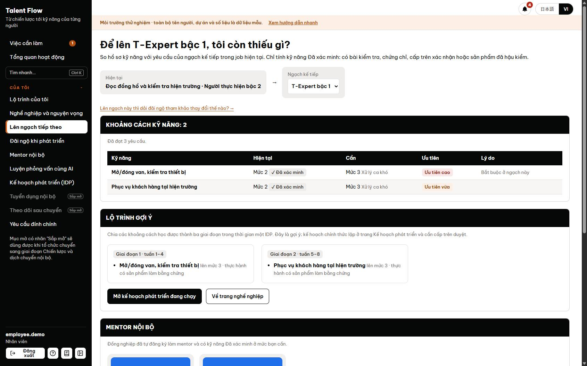
Đã xác minh và Khai báo. Một kỹ năng là Đã xác minh khi có bài kiểm tra, chứng chỉ, cấp trên xác nhận hoặc sản phẩm đã được hậu kiểm. Kỹ năng chỉ có tự đánh giá là Khai báo. Nhãn này hiện ở hồ sơ, trang lên ngạch và khi cấp trên tìm người theo kỹ năng; cấp trên và nhân sự vẫn xem được mức tự đánh giá của bạn như trước.
9Khi job của bạn đổi yêu cầu kỹ năngPhase 1
Khi nhân sự kích hoạt phiên bản yêu cầu kỹ năng mới cho job của bạn (hoặc job mục tiêu của IDP đang chạy), bạn nhận thông báo “Job của bạn vừa đổi yêu cầu kỹ năng”. Đường dẫn: Bước 1 → Thay đổi yêu cầu của job, thông báo, hoặc thẻ “Thay đổi yêu cầu của job” ở trang Nghề nghiệp và nguyện vọng.
- Trang liệt kê phần đổi ở ngạch của bạn: Kỹ năng mới, Đổi yêu cầu (mức cần, mức độ cần thiết), Không còn trong khung; kèm mức hiện tại của bạn.
- IDP đang chạy giữ nguyên. Kỹ năng không còn trong khung vẫn được tính vào tiến độ.
- Bấm Đề xuất thêm … hoạt động vào IDP để thêm hoạt động cho kỹ năng mới. Hoạt động hiện nhãn “Đề xuất, chờ duyệt”, chưa bắt đầu được và chưa tính vào tiến độ cho tới khi cấp trên duyệt.
10Báo quan tâm một cơ hộiPhase 2
Ở tab Cơ hội đang mở của Tuyển dụng nội bộ, bấm ☆ Quan tâm khi bạn muốn được liên hệ về cơ hội như vậy nhưng chưa muốn nộp đơn. Tín hiệu chỉ gửi tới nhân sự; cấp trên hiện tại và người đăng tuyển không được thông báo. Bấm lại để bỏ. Mức phù hợp hiện bằng chữ (cao, trung bình, thấp), không hiện phần trăm.
11Mentor nội bộPhase 1
Đường dẫn: Bước 3 → Mentor nội bộ. Mentor là đồng nghiệp tự đăng ký; kỹ năng trên thẻ là kỹ năng Đã xác minh của họ.
- Gợi ý mentor theo kế hoạch của bạn: mentor có kỹ năng bạn còn thiếu ở ngạch kế tiếp hoặc trong IDP đang chạy. Lọc theo giai đoạn của kế hoạch. Phần Tất cả mentor tìm được theo tên, job, đơn vị, chủ đề, kỹ năng.
- Bấm Xem thông tin: tab Tổng quan có giới thiệu, kỹ năng nổi bật kèm mức, chủ đề có thể hỗ trợ và vì sao phù hợp với từng giai đoạn của bạn; tab Cảm nhận hiện đánh giá không tên của đồng nghiệp.
- Tab Đặt lịch: ghi chủ đề, chọn tối đa 2 kỳ vọng, thời gian mong muốn, hình thức; có thể cho mentor xem hồ sơ kỹ năng trong buổi đó (chỉ kỹ năng Đã xác minh, không gồm tự đánh giá). Kịch bản dự kiến hiện ngay để hai bên chuẩn bị. Mỗi người có số lượt hẹn giới hạn trong tháng. Bấm Kiểm tra trước khi gửi: hộp xác nhận tóm tắt mentor, chủ đề, thời gian, hình thức, có chia sẻ hồ sơ hay không và số lượt còn lại sau khi gửi.
- Lịch của tôi: theo dõi trạng thái (chờ phản hồi, đã nhận, đã hoàn thành, đã huỷ kèm lý do). Sau buổi hẹn, bấm hoàn thành và gửi cảm nhận 1–5 sao.
- Muốn làm mentor: Hồ sơ mentor của tôi → bật đăng ký, ghi giới thiệu, chủ đề, hình thức, số lượt nhận mỗi tháng. Yêu cầu tới bạn nằm ở tab “Đồng nghiệp đặt với tôi”: nhận (ghi địa điểm hoặc link) hoặc từ chối kèm lý do.
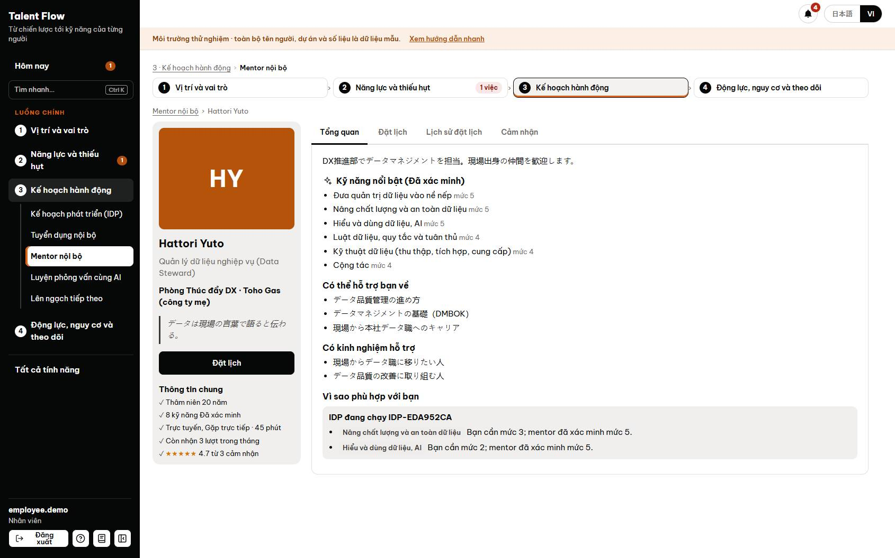
12Luyện phỏng vấn cùng AIPhase 1
Đường dẫn: Bước 3 → Luyện phỏng vấn cùng AI. Thực hành trả lời phỏng vấn trước khi ứng tuyển nội bộ, lên ngạch hoặc trao đổi với cấp trên. Chỉ bạn xem được các buổi luyện; kết quả không vào hồ sơ kỹ năng và không phải đánh giá chính thức.
- Luyện tập theo kế hoạch phát triển: buổi gợi ý từ từng giai đoạn lên ngạch tiếp theo và job mục tiêu của IDP đang chạy. Bấm Bắt đầu luyện để tạo buổi 15 phút; buổi đã luyện hiện Xem chi tiết.
- Muốn luyện cho vị trí khác: bấm + Bắt đầu luyện tập ở phần Lịch sử luyện tập. Chọn Job nội bộ (kèm ngạch mục tiêu nếu muốn) hoặc một Cơ hội tuyển nội bộ đang mở; chọn trọng tâm (cân bằng, bám mô tả job, hoặc bám kỹ năng bạn còn thiếu), ngôn ngữ, thời lượng 10/15/20 phút và ghi yêu cầu bổ sung nếu có. Mô tả công việc lấy từ kiến trúc job, bạn không cần dán.
- Trong buổi luyện: trả lời từng câu bằng chữ như đang nói với người phỏng vấn (bối cảnh, việc bạn làm, kết quả). Bấm Lưu hoặc chuyển câu; các vòng tròn bên trái cho biết câu nào đã trả lời. Không ghi họ tên, số điện thoại hay thông tin cá nhân: phần này bị che trước khi lưu.
- Bấm Kết thúc và xem nhận xét (hoặc Kết thúc sớm). Mỗi câu có điểm 1–5 theo bốn tiêu chí: chuyên môn, ví dụ cụ thể, mạch lạc, phù hợp job; kèm điểm mạnh, điều cần cải thiện và dàn ý gợi ý. Phần Tổng kết có điểm chung và các kỹ năng nên luyện thêm, nối sang kế hoạch phát triển.
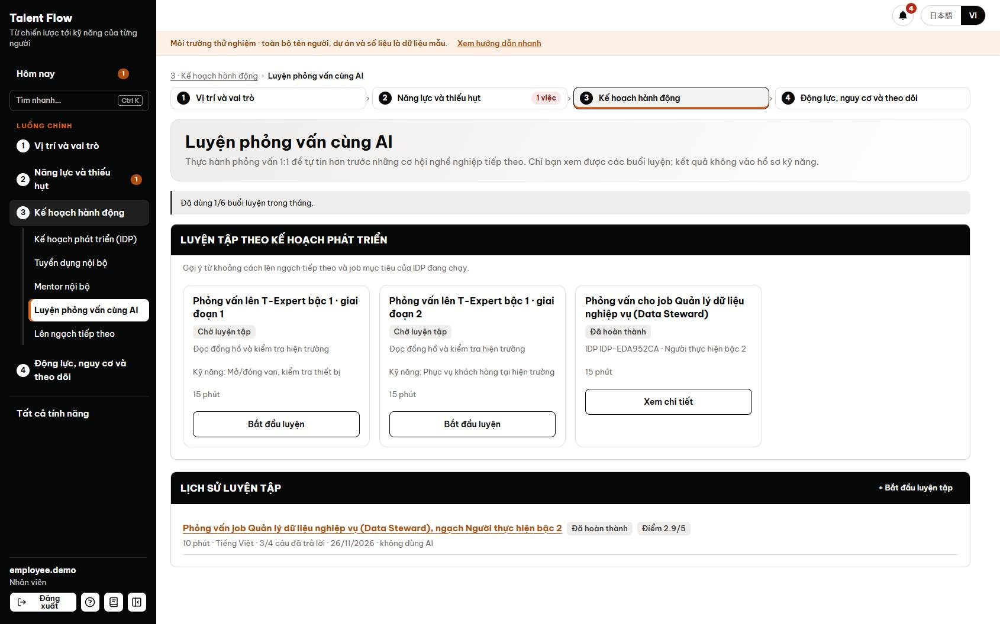

Khi AI chưa bật. Trang ghi “AI chưa được bật cho tổ chức”: câu hỏi và nhận xét sinh theo quy tắc từ kỹ năng, mức và nhiệm vụ của job. Khi tổ chức bật AI, câu hỏi và nhận xét do AI tạo; họ tên và mã nhân viên của bạn không được gửi đi. Mỗi người có số buổi luyện giới hạn trong tháng.
Hình thức luyện hiện có: hỏi – đáp bằng chữ. Chưa có dạng bài test (câu hỏi có đáp án, chấm tự động) và phỏng vấn bằng giọng nói hoặc video. Hai dạng này cần tổ chức chọn dịch vụ chuyển giọng nói thành chữ, quyết định nơi lưu và thời hạn giữ bản ghi, và bật AI; hướng dẫn sẽ cập nhật khi có.
13Đãi ngộ khi phát triểnPhase 1
Đường dẫn: Bước 4 → Đãi ngộ khi phát triển, hoặc liên kết ở trang Lên ngạch tiếp theo và ô ③ của Tổng quan hoạt động. Trang cho thấy dải đãi ngộ tham khảo thay đổi thế nào khi bạn lên ngạch kế tiếp hoặc chuyển sang job mong muốn, đặt cạnh những gì còn thiếu để tới đó.
- Đọc hộp lưu ý ở đầu trang: đây là dải tham khảo theo ngạch và job, không phải lương của bạn hay của ai khác, và không phải cam kết. Bản thử nghiệm dùng số liệu mẫu, có nhãn “Số liệu mẫu”.
- Ba cột Hiện tại, Ngạch kế tiếp, Job mong muốn: mỗi cột có thu nhập năm tham khảo, lương cơ bản tháng, thưởng (số tháng), phụ cấp. Thanh dải đặt trên cùng một thước để so bằng mắt; chênh lệch tính ở giữa dải.
- Ở cột giữa, chọn nhánh ngạch (ví dụ lộ trình chuyên gia hoặc trưởng nhóm). Dưới cột là số kỹ năng còn thiếu; đủ hết thì bạn đủ điều kiện được xét lên ngạch, quyết định vẫn qua đánh giá chính thức.
- Ở cột phải, chọn job để so: nguyện vọng đã khai đứng đầu, sau đó là job cùng công ty. Đổi job cần có vị trí trống, đi qua tuyển nội bộ hoặc điều chuyển định kỳ.
- Phần Biến dải tham khảo thành kế hoạch: kỹ năng còn thiếu → việc trong IDP → đủ điều kiện được xét → đánh giá chính thức. Bấm Lập kế hoạch phát triển (hoặc mở IDP đang chạy) và Tìm mentor nội bộ.
- Cuối trang: chứng chỉ có phụ cấp liên quan tới kỹ năng bạn còn thiếu, và bảng phúc lợi theo ba cột.
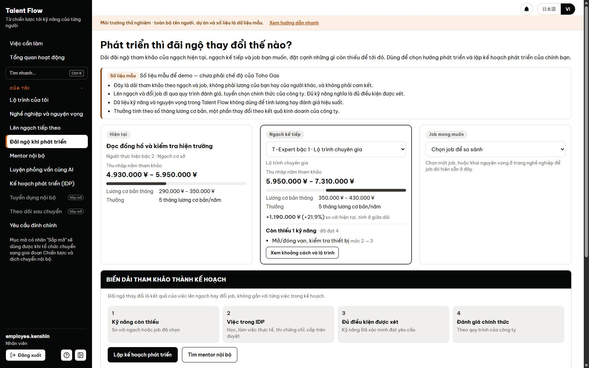
Điều trang này không làm. Không hiện lương của bạn hay của đồng nghiệp; cấp trên không xem phần so sánh của bạn. Dữ liệu kỹ năng và nguyện vọng không dùng để tính lương hay đánh giá hiệu suất. Tổ chức có thể tắt trang này.
Hướng dẫn cho cấp trên và người đăng tuyển
1Hôm nay của đơn vị
Đường dẫn: Hôm nay ở đầu menu (trang mở đầu sau khi đăng nhập). Trang gom việc của đơn vị bạn và việc của chính bạn. Mỗi mục có nút đi thẳng tới đúng chỗ, ví dụ Bắt đầu hậu kiểm mở luôn bằng chứng đầu hàng chờ.
- Chờ bạn quyết định: bằng chứng chờ hậu kiểm; IDP chờ duyệt; hoạt động đề xuất thêm vào IDP; thành viên được chọn chuyển nội bộ đang chờ bạn phản hồi (Phase 2).
- Rủi ro cao: kỹ năng của nhóm chỉ một chuyên gia nắm; đơn vị an toàn dưới hoặc sắp dưới số người tối thiểu.
- Cần chú ý: thành viên chưa đủ 5 kỹ năng đã xác nhận; thiếu hụt của nhóm chưa có hành động; chứng chỉ trong phạm vi sắp hết hạn (90 ngày); mốc kiểm tra 30/60/90 ngày của người mới chuyển về nhóm đến hạn (Phase 2).
- Lối tắt: đề xuất của bạn đang chờ nhân sự duyệt; lộ trình của chính bạn.
- Người đăng tuyển thấy thêm đơn ứng tuyển vào cơ hội mình đăng (khi tuyển dụng nội bộ đã mở ở Phase 2).
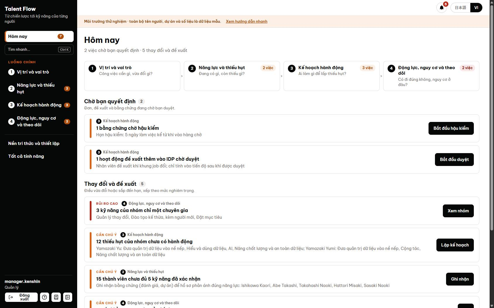
Tổng quan hoạt động: Đơn vị của tôi
Đường dẫn: Hôm nay → Tổng quan. Tờ A3 của cấp trên trực tiếp (người đăng tuyển dùng cùng tờ) trả lời câu “Nhóm có đủ năng lực và an toàn không, việc gì cần tôi quyết định?”:
- 1 · Bối cảnh: đơn vị nào, bao nhiêu người, đang chịu yêu cầu gì?
- 2 · Hiện trạng: hồ sơ kỹ năng và mức an toàn của nhóm thế nào?
- 3 · Mục tiêu: nhóm cần đạt điều gì?
- 4 · Phân tích: rủi ro lớn nhất ở đâu?
- 5 · Đối sách: việc gì cần tôi quyết định ngay?
- 6 · Kế hoạch: làm theo thứ tự nào?
- 7 · Theo dõi: chương trình phát triển của nhóm đang chạy ra sao?
Ô 5 và 6 là việc cần quyết định, giống trang Hôm nay nhưng đặt cạnh rủi ro và mục tiêu. Ảnh tờ của cấp trên: xem Tổng quan hoạt động ở phần Bắt đầu.
2Xem kỹ năng của nhóm và ghi nhận bằng chứngPhase 1
Đường dẫn: Bước 2 → Nhóm → Kỹ năng của nhóm.
- Mỗi ô là một người; ô viền cam là người còn ít hơn 5 kỹ năng đã xác nhận. Bấm để mở hồ sơ.
- Ghi nhận kỹ năng thể hiện qua công việc, dự án, chứng chỉ của cấp dưới. Bằng chứng của cấp trên có trọng số cao hơn tự khai.
3Duyệt IDPPhase 1
Đường dẫn: Bước 3 → Nhóm → Duyệt IDP và hậu kiểm, tab IDP chờ duyệt; hoặc bấm Bắt đầu duyệt ở việc “N IDP chờ bạn duyệt” trên trang Hôm nay (mở thẳng IDP cũ nhất).
Hàng chờ và màn hình một mục. Trang Duyệt IDP và hậu kiểm chỉ liệt kê, chia ba tab có số lượng: bằng chứng chờ hậu kiểm, IDP chờ duyệt, hoạt động đề xuất. Mỗi mục mở ra một màn hình riêng gồm: dải bước của quy trình (bước nào, ai phụ trách), nội dung cần để quyết định, khung Thủ tục kèm liên kết tới hướng dẫn, Lịch sử (ai làm gì, khi nào, lý do) và thanh điều hướng “Mục 3 / 12” với Mục trước / Mục sau. Mọi quyết định có hộp xác nhận liệt kê đối tượng và hệ quả; ô Xử lý xong thì sang mục sau (bật sẵn) đưa bạn thẳng tới mục tiếp theo. Bạn không mở được mục ngoài phạm vi của mình, kể cả khi gõ thẳng đường dẫn.
- Xem mục tiêu, danh sách task (mức, giờ, bắt buộc hay nên có), giờ học so với ngân sách và các khoảng cách không học được qua khoá học. Bấm Xem toàn bộ IDP của nhân viên nếu cần.
- Bấm Duyệt IDP, hoặc Từ chối IDP rồi ghi lý do (bắt buộc) và bấm Kiểm tra trước khi gửi.
- Kiểm tra hộp xác nhận rồi bấm nút xác nhận. Nhân viên nhận thông báo; màn hình chuyển sang mục tiếp theo hoặc báo đã hoàn tất và bước kế tiếp thuộc về ai.
4Hậu kiểm bằng chứngPhase 1
Đường dẫn: Bước 3 → Nhóm → Duyệt IDP và hậu kiểm, tab Bằng chứng chờ hậu kiểm (mục cũ nhất ở trên cùng), hoặc Bắt đầu hậu kiểm trên trang Hôm nay. Màn hình một bằng chứng có cấu trúc như mục 3.
- Xem lần nộp thứ mấy và số ngày đã chờ. Mở file hoặc link bằng chứng, đọc yêu cầu bằng chứng của task, ghi chú của nhân viên và nhận xét sơ bộ của AI (nếu có). Khung Tiêu chí của mức ngay dưới cho biết mức cần đạt nghĩa là gì; đối chiếu bằng chứng với tiêu chí này.
- Bấm Đạt, hoặc Trả lại rồi ghi lý do để nhân viên bổ sung. Hộp xác nhận nói rõ: Đạt thì kỹ năng được ghi vào hồ sơ và không hoàn tác được; Trả lại thì nhân viên nộp lại.
- Xử lý trong 5 ngày làm việc; bằng chứng quá hạn có chữ “quá hạn” và được đếm riêng ở dải tóm tắt; việc trên trang Hôm nay chuyển sang mức rủi ro cao.
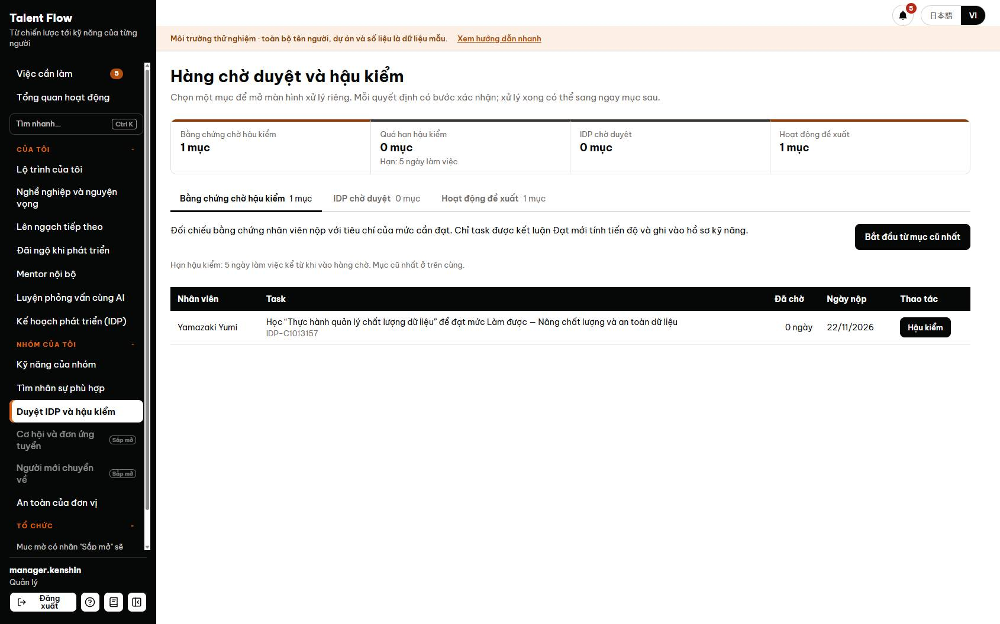
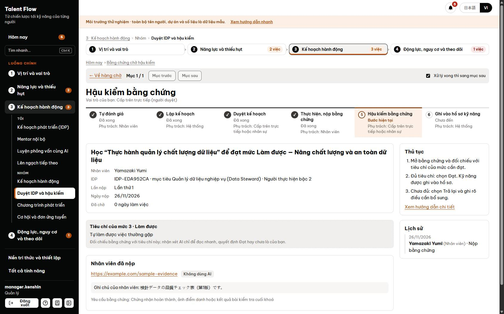
5Phản hồi đơn tuyển nội bộ của cấp dướiPhase 2
- Bạn chỉ được báo khi đơn của cấp dưới đã vào vòng trong và được nhân sự xác nhận.
- Trong 14 ngày, chọn Đồng ý, hoặc đề nghị hoãn một lần, có lý do, tối đa 90 ngày. Bạn không có quyền từ chối.
- Xem gợi ý bù người để chuẩn bị cho đơn vị trước khi người chuyển đi.
6Đăng cơ hội nội bộ và chọn ứng viên (người đăng tuyển)Phase 2
- Ở Tuyển dụng nội bộ, tab Cơ hội tôi đăng, bấm Đăng cơ hội mới: chọn loại (tuyển nội bộ, dự án, làm thêm), job, đơn vị, mô tả và kỹ năng cần. Cơ hội được nhân sự duyệt trước khi đăng.
- Xem ứng viên xếp theo mức phù hợp, chỉ có hồ sơ kỹ năng không tên.
- Chọn ứng viên vào vòng trong (lúc này mới thấy tên), rồi chọn người được chọn. Loại đơn phải ghi lý do; lý do được gửi cho ứng viên.
7Hỗ trợ người mới chuyển về đơn vịPhase 2
Đường dẫn: Bước 4 → Nhóm → Người mới chuyển về. Đánh dấu checklist 90 ngày (chào đón, người hướng dẫn, mục tiêu, đào tạo, hướng dẫn an toàn) và các mốc 30/60/90 ngày.

8Tìm nhân sự phù hợpPhase 1
Đường dẫn: Bước 2 → Nhóm → Tìm nhân sự phù hợp Tìm người trong đơn vị bạn phụ trách theo bộ kỹ năng.
- Gõ câu hỏi thường ngày (ví dụ “ai quản lý đồng hồ thông minh và kiểm tra chất lượng dữ liệu hiện trường được?”) rồi bấm Hỏi. Hệ thống tìm tên kỹ năng trong câu hỏi; bạn thêm, bỏ kỹ năng hoặc đổi mức cần rồi bấm Tìm lại theo kỹ năng đã chọn.
- Kết quả chia ba nhóm: Làm được ngay (đủ mọi kỹ năng ở mức cần, đều Đã xác minh), Thiếu một kỹ năng (kèm kỹ năng còn thiếu và đã có trong IDP chưa), Chưa đủ dữ liệu (mới ở mức Khai báo: chỉ đếm, không hiện tên).
- Đây là gợi ý để trao đổi, không phải quyết định giao việc. Mỗi lần tìm được ghi nhật ký.
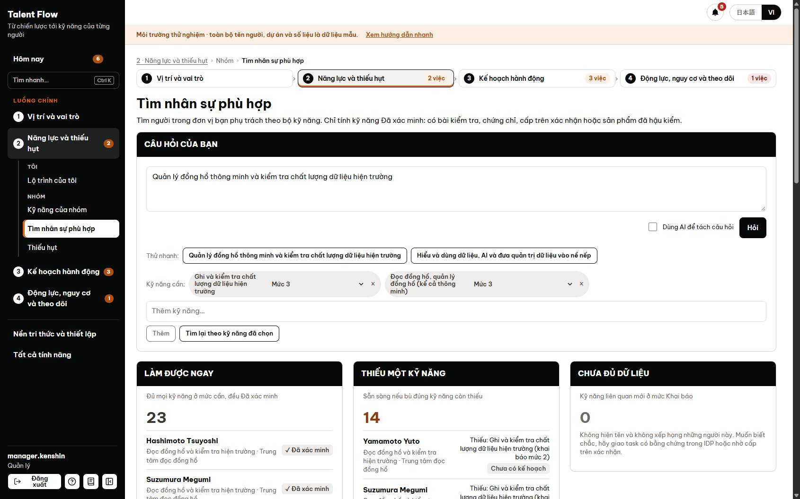
9Duyệt hoạt động đề xuất thêm vào IDPPhase 1
Đường dẫn: Bước 3 → Nhóm → Duyệt IDP và hậu kiểm, tab Hoạt động đề xuất. Khi job đổi yêu cầu kỹ năng, nhân viên đề xuất hoạt động cho kỹ năng mới vào IDP đang chạy. Mở từng hoạt động (màn hình một mục như mục 3), bấm Duyệt hoạt động để hoạt động thành task thường và được tính tiến độ, hoặc Không duyệt kèm lý do; cả hai có hộp xác nhận. Bạn không duyệt được hoạt động của chính mình.
10Dashboard đơn vịPhase 1
Đường dẫn: Bước 3 → Nhóm → Chương trình phát triển, phần Dashboard đơn vị. Chỉ có số tổng hợp: số người trong phạm vi, số người đã có kế hoạch, bằng chứng chờ xác minh, tỷ lệ yêu cầu kỹ năng đã xác minh; kỹ năng yêu cầu chưa xác minh đủ; khoảng cách trong IDP chia theo nguồn (lên ngạch hay job vừa đổi) và số đã đạt trong quý.

Hướng dẫn cho nhân sự
Hôm nay của nhân sự
Đường dẫn: Hôm nay ở đầu menu (trang mở đầu sau khi đăng nhập). Nhân sự tập đoàn thấy việc của toàn nhóm; nhân sự công ty thấy việc trong công ty mình. Nhân sự thấy cả việc dẫn tới trang của Phase 2 để chuẩn bị dữ liệu trước.
- Rủi ro cao: đơn vị an toàn dưới hoặc sắp dưới số người tối thiểu; kỹ năng then chốt chỉ một người nắm hoặc chưa ai nắm; hệ thống then chốt phụ thuộc một người và chưa có tài liệu; hành động không truy vết được về bối cảnh.
- Chờ bạn quyết định và cần chú ý: duyệt thiếu hụt mới và các đề xuất khác; vị trí xoay trục chưa có người kế thừa sẵn sàng; năng lực thiếu người ở cả 4 kịch bản; thiếu hụt đã duyệt chưa có hành động; đơn chuyển nội bộ chờ nhân sự (Phase 2); kiểm tra chất lượng dữ liệu chưa đạt; chứng chỉ sắp hết hạn; biệt phái sắp kết thúc; bằng chứng và hoạt động đề xuất chờ hậu kiểm trong phạm vi.
- Lối tắt: nhịp vận hành (việc định kỳ của tuần, quý).
Ảnh trang Hôm nay của nhân sự: xem Trang Hôm nay.
Tổng quan hoạt động: Năng lực tổ chức
Đường dẫn: Hôm nay → Tổng quan. Tờ A3 của nhân sự (quản trị dùng cùng tờ) trả lời câu “Chiến lược cần năng lực gì, thiếu ở đâu, đã lấp đến đâu?”:
- 1 · Bối cảnh: chiến lược đòi hỏi năng lực gì?
- 2 · Hiện trạng: con người hiện có đáp ứng đến đâu?
- 3 · Mục tiêu: cần bao nhiêu người cho mỗi job chiến lược?
- 4 · Phân tích: thiếu ở đâu nhiều nhất (0–12 tháng)?
- 5 · Đối sách: lấp bằng người nội bộ nào?
- 6 · Kế hoạch: việc gì cần quyết định trước?
- 7 · Theo dõi: hành động đã lấp được bao nhiêu?
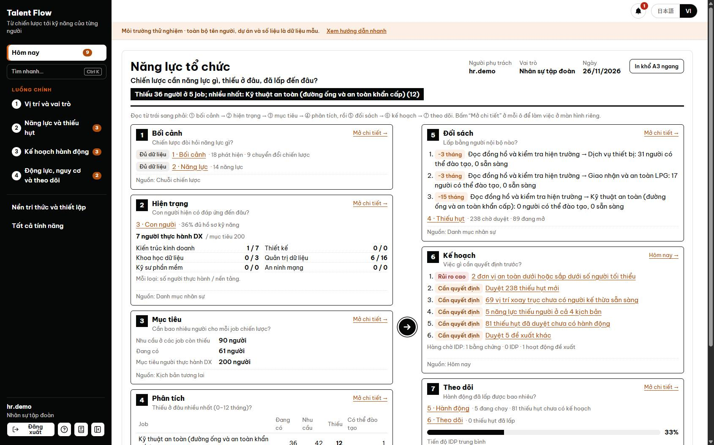
1Nạp và cập nhật dữ liệu
Đường dẫn: Nền tri thức và thiết lập → Dữ liệu và thiết lập (trang Dữ liệu và thiết lập).
- Làm lần lượt 6 bước: Từ điển kỹ năng và vai trò, Danh sách nhân viên, Bằng chứng kỹ năng, Bối cảnh, Năng lực, Mục tiêu và kế thừa.
- Ở mỗi bước, bấm Tải file mẫu, điền dữ liệu vào các sheet.
- Chạy Kiểm tra trước để xem lỗi theo từng dòng mà chưa ghi dữ liệu, sửa file, rồi nạp.
- Bước đã đủ có dấu ✓; bước cần làm tiếp được tô cam.
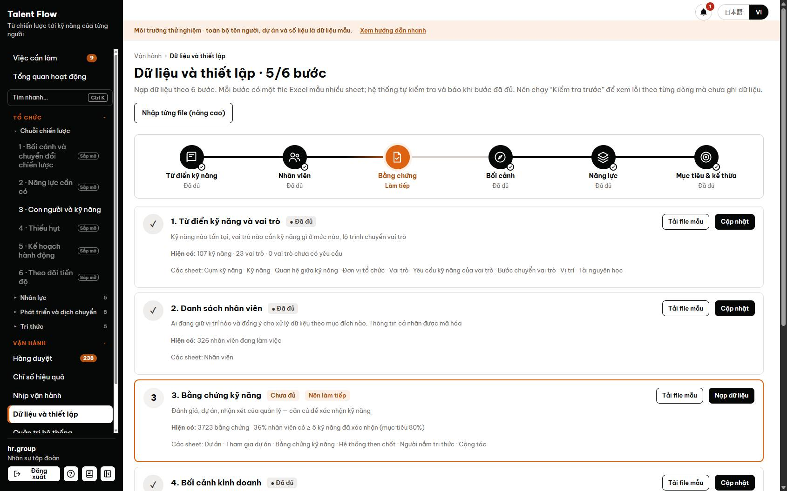
2Bối cảnh, chuyển đổi chiến lược và năng lựcPhase 2
- Nền tri thức và thiết lập → Bối cảnh và chuyển đổi chiến lược: xem phát hiện theo 3 tiêu chí × 3 thời điểm và các chuyển đổi chiến lược (bản đồ, luồng căn cứ, bảng 3×3).
- Năng lực cần có: xem mỗi chuyển đổi cần năng lực nào, năng lực do job nào gánh và cần kỹ năng gì.
- Kịch bản tương lai: so sánh nhu cầu năng lực theo các kịch bản.

3Kiến trúc job: tên, mô tả và yêu cầu kỹ năngPhase 1
Đường dẫn: Bước 1 → Kiến trúc job, tab Job.
- Chọn job ở danh sách bên trái (mỗi job có đoạn trích mô tả).
- Sửa tên job và mô tả job: mỗi thứ có hai ô, một ô bản gốc (ngôn ngữ dữ liệu của tổ chức, với Toho là tiếng Nhật) và một ô bản dịch. Mỗi ô chỉ ghi một ngôn ngữ. Thiếu bản dịch thì người dùng ngôn ngữ kia thấy bản gốc.
- Chọn công ty, bậc vai trò, loại job, trạng thái, phân khúc; bấm Lưu job.
- Ở Yêu cầu kỹ năng, bấm Gợi ý kỹ năng theo mô tả job. Hệ thống đọc mô tả job đang có trên màn hình (mô tả ngắn và các mục mô tả chi tiết) rồi điền kỹ năng và mức vào bảng. Dòng mới có nhãn Gợi ý; rê chuột lên nhãn để xem đoạn văn làm căn cứ. Khi AI tắt, hệ thống so khớp tên kỹ năng trong từ điển.
- Sửa mức và mức cần thiết (Bắt buộc / Nên có / Có thì tốt), thêm hoặc bỏ kỹ năng; bấm Lưu yêu cầu. Không có gì được lưu tới khi bạn bấm Lưu yêu cầu.
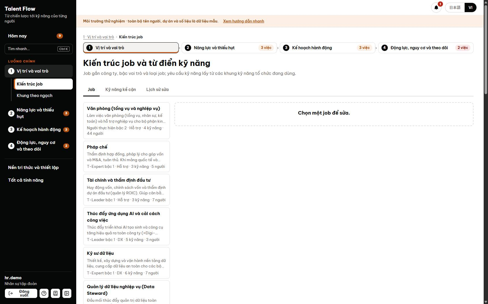
4Khung năng lực theo ngạchPhase 1
Đường dẫn: Bước 1 → Khung theo ngạch.
- Xem các thang mức (ví dụ thang việc hiện trường 0–4, thang kinh nghiệm kèm cặp 0–4).
- Chọn job, chọn ngạch để xem mức yêu cầu, trọng số, kỹ năng có học được qua khoá học không.
- Đổi khung: bấm Tải template, điền một dòng cho mỗi ngạch × kỹ năng, đặt tên phiên bản, bấm Tải lên và so sánh.
- Đọc báo cáo ảnh hưởng: mục thêm, bỏ, đổi; số người và số IDP bị ảnh hưởng.
- Ghi người xác nhận phía tổ chức và ngày xác nhận, bấm Kích hoạt; hoặc Huỷ bản nháp. Bản cũ được lưu lại, không ghi đè.
5Hàng duyệt
Đường dẫn: Nền tri thức và thiết lập → Hàng duyệt.
- Chọn tab: Thiếu hụt, Hành động phát triển, Cơ hội nội bộ, Đề cử người kế thừa, Yêu cầu đính chính, Bằng chứng do AI trích xuất.
- Với thiếu hụt, bấm một ô của ma trận "Việc chờ dồn ở đâu" để lọc; nên duyệt ô Bắt buộc · 0–12 tháng trước.
- Chọn từng mục hoặc Chọn tất cả các mục đang lọc, bấm Duyệt, hoặc ghi lý do và bấm Từ chối.
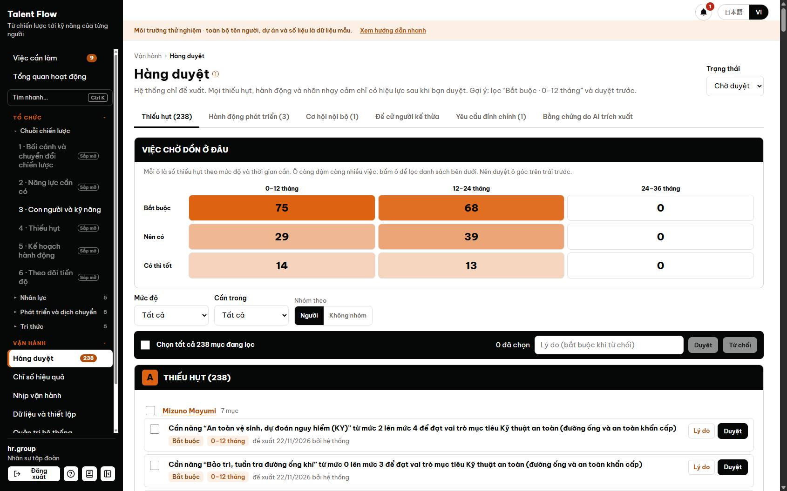
6Thiếu hụt và kế hoạch hành độngPhase 2
- Bước 2 → Thiếu hụt: xem thiếu hụt theo mức độ × thời gian cần; bấm Lý do để xem căn cứ kinh doanh.
- Kế hoạch hành động: mỗi cột là một trạng thái. Kéo thẻ sang cột kế tiếp hoặc bấm nút trên thẻ để cập nhật; hành động ở cột Chờ duyệt cần nhân sự duyệt trước.
- Theo dõi tiến độ: dòng chảy thiếu hụt, sức khỏe dữ liệu, thiếu hụt đang mở theo thời gian cần lấp.
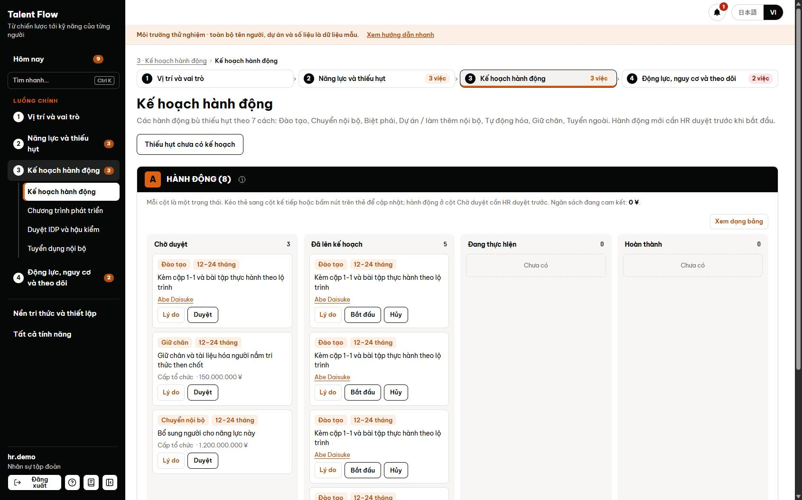
7Danh mục nhân sự và công bố vốn con ngườiPhase 2
Đường dẫn: Bước 2 → Danh mục nhân sự. Tab Cung – cầu theo job, công ty, giai đoạn và kịch bản; Nhân lực DX đếm theo kỹ năng thực; Công bố vốn con người có 23 chỉ số, nhóm, phạm vi, đơn vị và mục tiêu hiện theo ngôn ngữ giao diện, xuất ra file Excel hoặc CSV; Nhu cầu để nhập nhu cầu nhân lực.

8An toàn và kế thừaPhase 1
Đường dẫn: Bước 4 → An toàn và kế thừa. Xem số người có chứng chỉ theo đơn vị so với mức tối thiểu (theo luật và chuẩn nội bộ), nhìn trước tới 180 ngày, chứng chỉ sắp hết hạn và kế hoạch đào tạo kế thừa. Khi một quyết định chuyển người làm đơn vị xuống dưới mức, hệ thống chặn; chỉ vượt được khi ghi lý do và phương án bù.

9Tuyển dụng nội bộ: duyệt và quyết địnhPhase 2
- Duyệt cơ hội mới ở Hàng duyệt, tab Cơ hội nội bộ.
- Khi phòng tuyển đã chọn người, xác nhận đơn; hệ thống báo cấp trên phòng đi.
- Sau khi cấp trên phòng đi đồng ý, hoãn, hoặc hết 14 ngày không phản hồi, quyết định chuyển. Ngày chuyển mặc định sau 60 ngày, hoặc theo ngày hoãn đã thống nhất. Người chuyển tự có kế hoạch 90 ngày.
10Điều chuyển định kỳ và biệt pháiPhase 2
Đường dẫn: Nền tri thức và thiết lập → Điều chuyển định kỳ.
- Nhập tên đợt và ngày áp dụng, bấm Tạo đợt.
- Với mỗi vị trí cần người, xem ứng viên xếp theo mức phù hợp và cảnh báo an toàn; lập phương án.
- Bấm Duyệt phương án, rồi Xuất file cho hệ thống nhân sự.
- Theo dõi người đang biệt phái và số ngày còn lại ở bảng Biệt phái đang có.
11Chương trình phát triển và Chỉ số hiệu quả
- Chương trình phát triển: số người có IDP theo trạng thái, tiến độ trung bình, task chờ duyệt, hậu kiểm quá hạn, tỷ lệ AI đạt sơ bộ, tỷ lệ bị trả lại; lọc theo trạng thái và bấm Xuất Excel.
- Chỉ số hiệu quả: mức sử dụng (% nhân viên dùng trang nghề nghiệp, tài khoản hoạt động, xu hướng 8 tuần), thời gian lấp vị trí bằng người nội bộ, tỷ lệ chấp nhận gợi ý AI so với mục tiêu 80%. Chỉ có số tổng hợp.
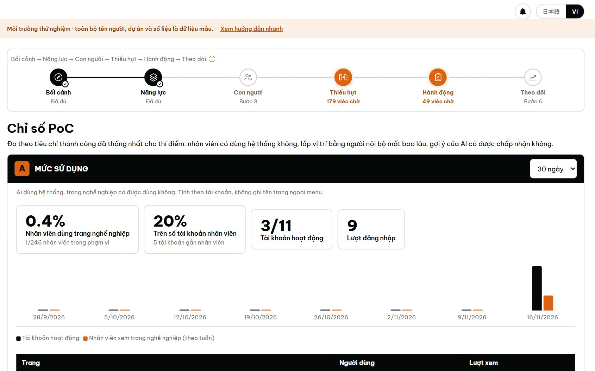
12Dựng bộ kỹ năng từ tài liệuPhase 1
Đường dẫn: Nền tri thức và thiết lập → Dựng bộ kỹ năng từ tài liệu. Dành cho nhân sự tập đoàn và quản trị.
- Nạp nguồn. Chọn job và ngạch, rồi dán văn bản hoặc chọn file .txt, .md, .csv: mô tả công việc, phân tích công việc, nhóm job, mẫu ticket. Có thể thêm tối đa 8 nguồn.
- Bấm Phân tích. Email, số điện thoại, đường dẫn, @tên và cột tên người trong file ticket được che trước khi phân tích; Báo cáo che thông tin cho biết đã che gì. Tên người viết tự do trong văn bản không phát hiện chắc chắn được: hãy tự rà trước khi nạp.
- Gợi ý. Mỗi kỹ năng có nguồn, số dòng và đoạn trích, cùng nhãn: Thiếu so với khung, Đổi mức, Đã có trong khung, Không thấy trong tài liệu, và Kỹ năng mới nổi nếu từ điển đánh dấu như vậy. Khi AI tắt, hệ thống so tên kỹ năng trong từ điển và giữ mức đang dùng.
- Chọn. Bấm Nhận hoặc Bỏ từng dòng, sửa mức cần nếu cần. Dòng “Không thấy trong tài liệu” mặc định chưa nhận: bạn tự quyết giữ hay bỏ.
- Tạo bản nháp. Đặt tên phiên bản và bấm Tạo bản nháp. Yêu cầu của các ngạch khác của job giữ nguyên. Mở Khung theo ngạch để xem báo cáo ảnh hưởng và kích hoạt sau khi người phía tổ chức xác nhận; khi kích hoạt, người giữ job và người có IDP nhắm job đó nhận thông báo.

Nhân sự cũng dùng được Bước 2 → Tìm nhân sự phù hợp trong phạm vi của mình (nhân sự công ty: trong công ty), và xem danh sách nhân viên báo quan tâm ở tab Tất cả của Tuyển dụng nội bộ.
13Ban giám đốc và Văn phòng DX
- Trang mở đầu: ban giám đốc và Văn phòng DX cũng vào Hôm nay. Trang hiện các bước mở cho vai trò này, lối tắt, và việc trong phạm vi (ví dụ bản thiết kế tổ chức chờ duyệt); không có việc của từng người. Danh mục nhân sự nằm ở bước 2.
- Tổng quan hoạt động: Danh mục nhân sự. Tờ A3 trả lời câu “Có đủ người cho chiến lược 2025–2027 không?”: ① bối cảnh (chiến lược cần dịch chuyển nhân sự thế nào), ② hiện trạng (năng lực DX và an toàn hôm nay), ③ mục tiêu (số người ở các job chiến lược), ④ phân tích (thiếu ở đâu nhiều nhất), ⑤ đối sách (dịch chuyển nội bộ nào khả thi), ⑥ kế hoạch (ban giám đốc cần quyết định gì), ⑦ theo dõi (chỉ số vốn con người công bố). Mọi số ở dạng tổng hợp; ô dưới 5 người được ẩn.
- Ban giám đốc: Danh mục nhân sự, An toàn và kế thừa, Chỉ số hiệu quả. Mọi số liệu ở dạng tổng hợp, không xem dữ liệu từng người.
- Văn phòng DX: Kiến trúc job cho kỹ năng DX và tab Nhân lực DX ở Danh mục nhân sự.
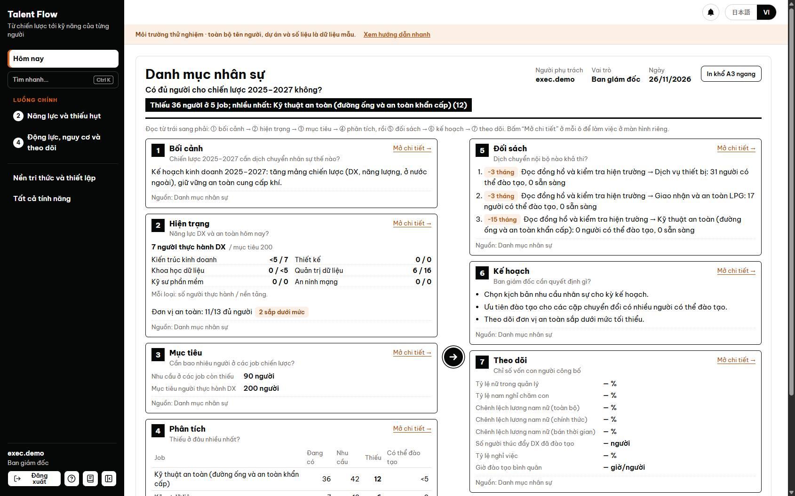
14Quản trị
Đường dẫn: Nền tri thức và thiết lập → Quản trị hệ thống.
- Trang mở đầu: quản trị vào Hôm nay; các trang quản trị nằm ở Nền tri thức và thiết lập. Tổng quan hoạt động hiện tờ Năng lực tổ chức như nhân sự (xem ở trên).
- Nhập file CSV / XLSX từng loại dữ liệu (nâng cao), với nút Kiểm tra trước khi nhập; Lịch sử nhập.
- Kiểm tra chất lượng dữ liệu và chạy ngay các tác vụ nền.
- Đồng ý theo mục đích: xem và thu hồi đồng ý của nhân viên.
- Người dùng: danh sách và Tạo tài khoản mới theo vai trò.
Trang Nhịp vận hành cho biết các tác vụ định kỳ đã chạy lúc nào và kết quả.
Workspace Tập đoàn BRG
BRG là tập đoàn nhiều pháp nhân (công ty mẹ, công ty con, liên doanh, công ty do đối tác quản lý) với nhiều lao động tuyến đầu theo mùa: sân golf, khách sạn, bán lẻ. Workspace BRG dùng chung mọi trang ở Phần 3–5, cộng thêm các trang dưới đây. Giao diện tiếng Việt và tiếng Anh.
Dữ liệu giả lập. Sáu pháp nhân, 273 người, 50 job trong workspace BRG đều là mẫu, không phải dữ liệu thật của BRG. Các con số pháp lý Việt Nam là tham số chưa được luật sư xác nhận; màn hình có nhãn Chưa xác nhận, không dùng làm căn cứ pháp lý.
| Tình huống | Ai dùng | Trang |
|---|---|---|
| Nhân viên văn phòng bán lẻ chuyển sang phân tích dữ liệu ở công ty mẹ | Nhân viên, người đăng tuyển, nhân sự | Chia sẻ hồ sơ, Tuyển dụng nội bộ, Pháp nhân |
| Mùa cao điểm golf: giữ đủ người phục vụ, mượn ca từ đơn vị khác | Quản lý đơn vị, nhân sự công ty | An toàn theo mùa, Tuyển dụng nội bộ, Điều động tạm thời |
| Mở cửa hàng mới, đào tạo lại người ở job thu hẹp | Nhân sự tập đoàn, ban lãnh đạo | Danh mục nhân sự, Kết quả dịch chuyển |
| Công nhận tay nghề của người tuyến đầu chưa có bằng | Quản lý, nhân sự | Công nhận kỹ năng đã có, Khung kỹ năng |
| Đổi cơ cấu theo chiến lược: mở vị trí mới, đóng vị trí cũ, xếp người | Nhân sự tập đoàn, ban lãnh đạo, cấp trên, người bị ảnh hưởng | Thiết kế tổ chức, Thay đổi tổ chức của nhóm, Thay đổi vị trí của tôi |
| Người lao động kiểm soát dữ liệu của mình | Nhân viên, nhân sự, quản trị | Chia sẻ hồ sơ, Dữ liệu của tôi, Yêu cầu về dữ liệu |
1Chia sẻ hồ sơ giữa các công tyBRG
Đường dẫn: Bước 2 → Chia sẻ hồ sơ giữa các công ty. Dành cho nhân viên, cấp trên, người đăng tuyển.
Công ty bạn đang làm luôn xem được hồ sơ kỹ năng. Công ty khác trong tập đoàn chỉ thấy bạn (trong tìm người, tuyển nội bộ, ca hỗ trợ) khi bạn đồng ý.
- Đánh dấu Mọi công ty trong tập đoàn (gồm cả công ty tham gia tuyển dụng nội bộ sau này), hoặc bỏ dấu và chọn từng công ty. Công ty có nhãn Chưa tham gia tuyển dụng nội bộ chưa thấy được ai.
- Bấm Rút mọi đồng ý khi muốn dừng chia sẻ. Rút đồng ý có hiệu lực ngay; đơn bạn đã nộp vẫn giữ ẩn danh.
- Mở Nội dung đồng ý để đọc văn bản và số phiên bản bạn đã đồng ý.
- Ở khung Kênh nhận thông báo, chọn thêm Email, Tin nhắn SMS. Thông báo trong ứng dụng luôn bật. SMS chỉ báo có việc cần xem, không chứa tên hay dữ liệu cá nhân.
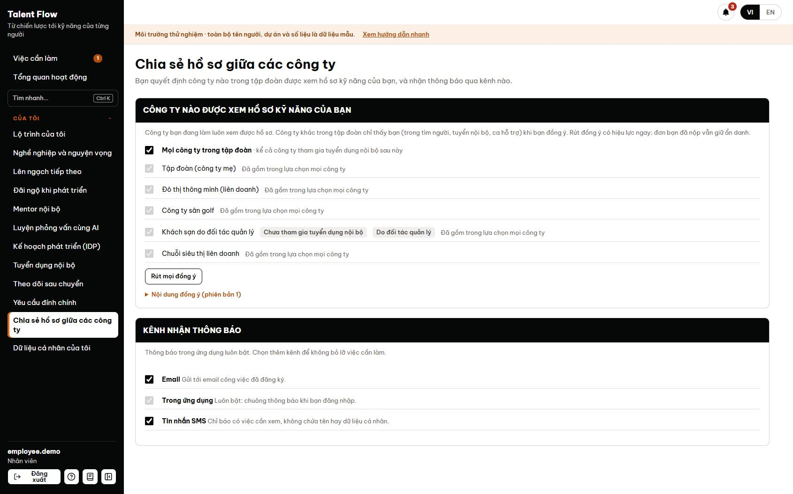
2Dữ liệu cá nhân của tôiBRG
Đường dẫn: Bước 2 → Dữ liệu cá nhân của tôi.
- Bấm Tải dữ liệu của tôi (JSON) để nhận bản sao dữ liệu hệ thống đang giữ về bạn.
- Ở Gửi yêu cầu mới, chọn loại: Xem dữ liệu, Nhận bản sao, Sửa dữ liệu, Xóa dữ liệu, Phản đối xử lý. Ghi nội dung nếu cần (không ghi số giấy tờ hay số tài khoản), rồi bấm Gửi yêu cầu.
- Theo dõi trạng thái ở Yêu cầu của bạn. Bạn nhận thông báo trong ứng dụng khi yêu cầu được xác nhận và xử lý xong.
Sửa kỹ năng thì gửi yêu cầu đính chính từ hồ sơ. Xóa dữ liệu sẽ rút mọi đồng ý; kỹ năng dựa trên bằng chứng đã đồng ý được tính lại.
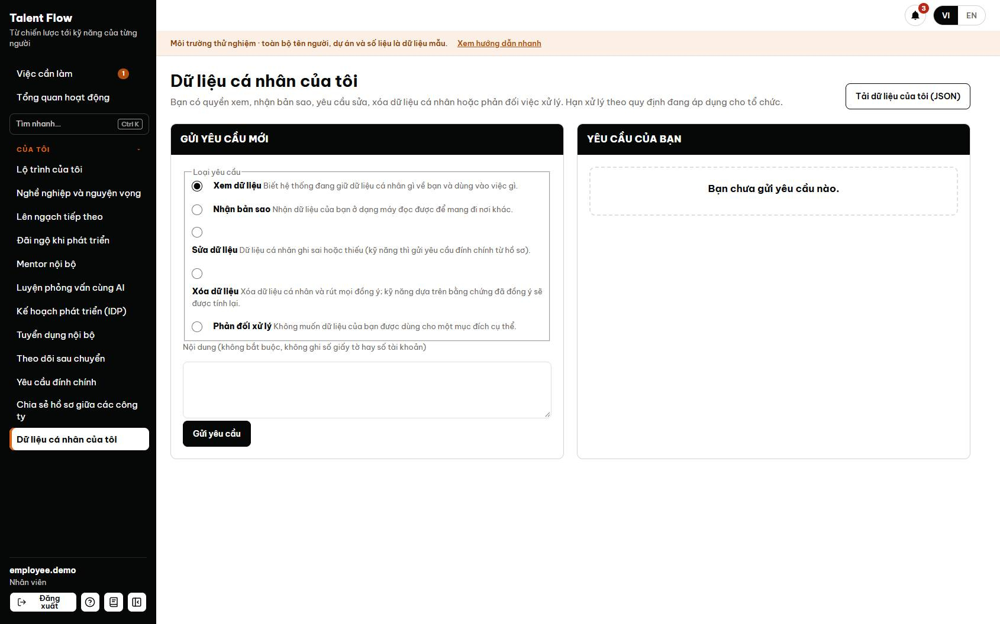
3Tuyển dụng nội bộ giữa các công tyBRG
Đường dẫn: Bước 3 → Tuyển dụng nội bộ. Cách ứng tuyển giống mục Ứng tuyển nội bộ; BRG có thêm:
- Loại cơ hội: tuyển nội bộ, dự án, ca làm ở đơn vị khác (kèm danh sách ngày ca), chuyển công ty trong tập đoàn.
- Cơ hội của công ty khác có nhãn Công ty khác trong tập đoàn, bậc tương đương ở công ty bạn (để so sánh, không phải xếp bậc), Thu nhập tham khảo (không phải cam kết), và hạn Ưu tiên người nội bộ đến.
- Chưa đồng ý cho công ty đăng cơ hội thì không nộp được đơn; trang nhắc và dẫn tới Chia sẻ hồ sơ giữa các công ty.
- Ràng buộc cứng trước khi xếp hạng: nếu chuyển người làm đơn vị nguồn xuống dưới mức tối thiểu, hệ thống chặn. Nhân sự tập đoàn thấy người bị loại và lý do.
- Chuyển công ty chỉ chốt khi nhân sự ghi tham chiếu văn bản thỏa thuận đã ký.
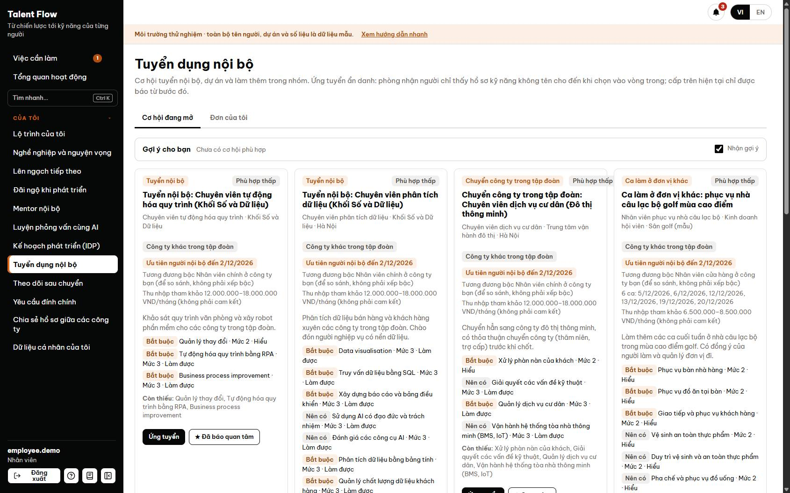
4Pháp nhân và tuyển dụng nội bộBRG
Đường dẫn: Nền tri thức và thiết lập → Pháp nhân và tuyển dụng nội bộ. Dành cho nhân sự và quản trị.
- Pháp nhân trong tập đoàn: loại, lĩnh vực, số người, bên quản lý. Bấm Bật / Tắt để công ty tham gia hoặc rời tuyển dụng nội bộ. Công ty không tham gia thì nhân viên không thấy cơ hội và không hiện trong tìm người của công ty khác. Công ty do đối tác quản lý cần ghi căn cứ thỏa thuận khi bật.
- Đồng ý chia sẻ hồ sơ theo công ty: số người cho mọi công ty, cho một số công ty, chưa đồng ý; chỉ có số, không có tên.
- Quy đổi chức danh giữa các công ty: chức danh tương đương, độ tin cậy, căn cứ. Dùng khi xếp ứng viên công ty khác, không phải quyết định xếp bậc.
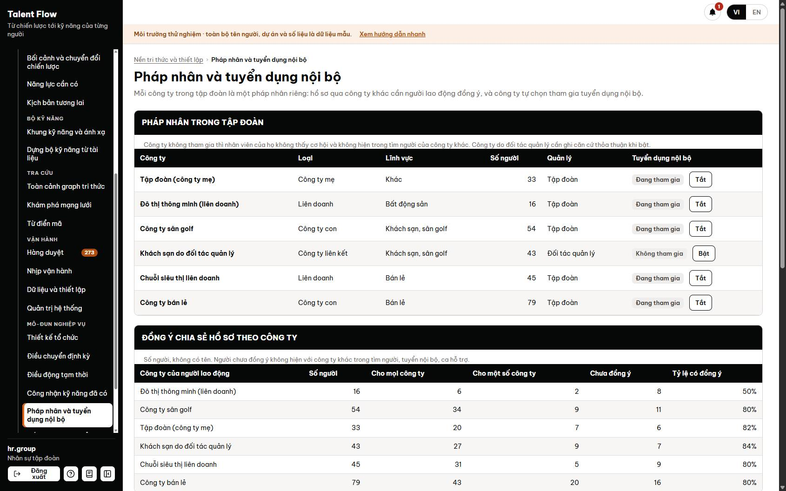
5Yêu cầu về dữ liệu cá nhânBRG
Đường dẫn: Nền tri thức và thiết lập → Yêu cầu về dữ liệu cá nhân. Dành cho nhân sự và quản trị.
- Đầu trang là số yêu cầu đang mở, quá hạn, và hạn đang áp dụng: số ngày làm việc để xác nhận đã nhận, số ngày xử lý (xem, sửa / xóa).
- Ở Hàng yêu cầu, mỗi yêu cầu có nút theo bước: Xác nhận đã nhận → Bắt đầu xử lý → Hoàn tất; ở bước nào cũng có Từ chối yêu cầu. Hoàn tất yêu cầu xóa sẽ thu hồi mọi đồng ý, xóa dữ liệu cá nhân, ẩn danh người đó; hệ thống hỏi lại vì không hoàn tác được. Mỗi bước được ghi nhật ký; người gửi nhận thông báo.
- Bỏ chọn Chỉ yêu cầu đang mở để xem cả yêu cầu đã xong.
Người đã nghỉ việc quá hạn giữ dữ liệu: tác vụ hằng đêm xóa dữ liệu cá nhân, chỉ giữ số tổng hợp.
6An toàn và kế thừa: mức phục vụ theo mùaBRG
Trang An toàn và kế thừa ở BRG có thêm loại mức Mức phục vụ: số người cần để giữ chất lượng dịch vụ, có thể chỉ áp dụng trong một kỳ (ví dụ mùa cao điểm golf 1/12/2026 – 31/3/2027). Mỗi đơn vị ghi kỳ áp dụng, số người hiện có → dự kiến / tối thiểu, và lý do giảm (nghỉ hưu, hết hạn chứng chỉ).
7Điều động tạm thờiBRG
Đường dẫn: Nền tri thức và thiết lập → Điều động tạm thời (nhân sự); cấp trên mở ở Bước 3 → Nhóm, chỉ thấy đơn vị mình.
- Chọn năm. Đầu trang là giới hạn ngày làm việc mỗi năm khi chuyển tạm thời không có đồng ý, cùng số người vượt, gần (từ 80%), trong giới hạn.
- Bảng Người đã chuyển tạm thời trong năm ghi số ngày không có đồng ý trên giới hạn (ví dụ 58/60) và từng lần chuyển. Lần có đồng ý bằng văn bản có nhãn Có đồng ý và không tính vào giới hạn.
- Ở Ghi nhận chuyển tạm thời, chọn nhân viên, đơn vị đến, từ ngày, đến ngày, ghi lý do; đánh dấu Có đồng ý bằng văn bản của người lao động nếu có; bấm Ghi nhận. Hệ thống đếm ngày làm việc (trừ cuối tuần và ngày lễ của tổ chức) và chặn lần ghi làm vượt giới hạn khi không có đồng ý.
8Công nhận kỹ năng đã cóBRG
Đường dẫn: Bước 2 → Nhóm → Công nhận kỹ năng đã có (cấp trên) hoặc Nền tri thức và thiết lập (nhân sự). Dành cho người có tay nghề nhưng chưa có bằng hoặc chưa có bằng chứng trên hệ thống.
- Danh sách người có kỹ năng chưa đủ mức job cần, ví dụ “Chưa ghi nhận · cần mức 3”. Gõ vào ô Lọc theo tên, job, đơn vị để thu hẹp.
- Bấm Đánh giá cạnh một kỹ năng. Quan sát người đó làm việc, đánh dấu từng tiêu chí đã thấy (thêm tiêu chí khác, mỗi dòng một tiêu chí), chọn Mức công nhận, ghi chú (không ghi thông tin cá nhân).
- Bấm Ghi kết quả: kết quả thành bằng chứng loại đánh giá; độ tin cậy kỹ năng được tính lại. Hệ thống không tự quyết mức.
9Khung kỹ năng và ánh xạBRG
Đường dẫn: Nền tri thức và thiết lập → Khung kỹ năng và ánh xạ. Dành cho nhân sự, Văn phòng DX, quản trị.
BRG dùng nhiều khung kỹ năng cùng lúc: khung năng lực số (Thông tư 02/2025), tiêu chuẩn kỹ năng nghề du lịch VTOS, tiêu chuẩn ASEAN ACCSTP, SFIA 9, tiêu chuẩn kỹ năng nghề quốc gia, và khung riêng của BRG. Mỗi khung ghi cơ quan ban hành, phiên bản, số kỹ năng, thang mức, giấy phép sử dụng và liên kết nguồn. Mỗi kỹ năng giữ mã của khung gốc; ánh xạ giữa các khung (ví dụ kỹ năng riêng của BRG tương đương kỹ năng VTOS) giúp so sánh người và job mà không phải đổi mã. Ánh xạ do AI gợi ý chờ người duyệt.
10Danh mục nhân sự: cầu theo giờ taskBRG
Trang Danh mục nhân sự ở BRG có thêm:
- Tab Sự kiện tạo nhu cầu: mở cửa hàng mới, bàn giao khu đô thị, mùa cao điểm; mỗi sự kiện ghi số giờ task cần.
- Cột Cầu theo giờ task ở bảng cung – cầu: quy số giờ ra số người trong kỳ (ví dụ 2.400 giờ ≈ 13,7 người).
- Tab Giờ được giải phóng: nhập tỷ lệ áp dụng tự động hóa (giả định của người xem) để thấy số giờ được giải phóng ở job thu hẹp. Thiếu số liệu thì không hiện số.
11Kết quả dịch chuyển và công bằngBRG
Đường dẫn: Nền tri thức và thiết lập → Kết quả dịch chuyển và công bằng. Dành cho nhân sự, ban lãnh đạo, quản trị. Mọi số là số tổng hợp.
- Dịch chuyển nội bộ theo kênh và theo công ty đăng cơ hội: cơ hội, đơn, đã chuyển, nhận offer, còn làm sau 90 ngày và sau 12 tháng. Tỷ lệ chỉ hiện khi có từ 5 quyết định trở lên.
- Công bằng của gợi ý cơ hội: bấm Chạy báo cáo để so tỷ lệ được gợi ý giữa các nhóm (quy tắc 4/5, để tham khảo). Nhóm thấp hơn 80% nhóm cao nhất được đánh dấu để người xem xét; hệ thống không tự sửa gợi ý.
- Hồ sơ ưu tiên đào tạo lại: theo job thu hẹp, số người, người đã có job đích, cơ hội đang mở, đơn, kế hoạch phát triển, đã chuyển. Xuất Excel hoặc CSV khi tổ chức cần chứng minh đã ưu tiên đào tạo lại người lao động.
12Thiết kế tổ chứcBRG
Đường dẫn: Nền tri thức và thiết lập → Thiết kế tổ chức. Dành cho nhân sự, ban lãnh đạo, quản trị. Trang trả lời câu hỏi: khi chiến lược đổi, cơ cấu, vị trí và job đổi thế nào, ai bị ảnh hưởng, và chuyển đổi theo kế hoạch nào.
- Bản thiết kế gắn với ít nhất một chuyển đổi chiến lược. Trang chi tiết có năm thẻ: Trước và sau, Thay đổi, Con người, Kế hoạch chuyển đổi, Vị trí còn trống.
- Thay đổi: danh sách thay đổi: lập, gộp, giải thể, chuyển đơn vị; mở, đóng, đổi job, chuyển vị trí; job mới, job thu hẹp. Mỗi thay đổi thuộc một đợt có ngày hiệu lực.
- Trước và sau: số đơn vị, số vị trí trước và sau thay đổi; số người đang giữ vị trí bị thay đổi; đơn vị thay đổi và số vị trí theo job.
- Duyệt: nhân sự gửi bản thiết kế; ban lãnh đạo duyệt hoặc trả lại kèm lý do.
- Gửi cấp trên: sau khi duyệt, nhân sự bấm Gửi cấp trên ở thẻ Kế hoạch chuyển đổi. Cấp trên của các đơn vị có thay đổi nhận thông báo và xem thay đổi của nhóm (mục 14). Người lao động chưa thấy gì ở bước này.
- Công bố: nhân sự bấm Công bố cho người lao động để mọi người bị ảnh hưởng thấy thay đổi của mình, kể cả ở đơn vị mà cấp trên chưa gửi. Người ở đơn vị mà cấp trên đã gửi kế hoạch nhóm thấy thay đổi từ lúc cấp trên gửi.
- Con người: hệ thống gợi ý vị trí mới cho từng người theo mức phù hợp kỹ năng. Nhân sự đề xuất và quyết định; hệ thống không tự xếp ai. Cột trạng thái ghi Cấp trên đề xuất hoặc Cấp trên đã đồng ý khi cấp trên đã xem. Chuyển sang công ty khác cần người đó đã đồng ý chia sẻ hồ sơ.
- Kế hoạch chuyển đổi: các bước thủ tục theo quy định của nước sở tại do người ghi lại; hệ thống chỉ nhắc. Bước Cấp trên chốt kế hoạch nhóm và gửi nhân viên ghi từng đơn vị đã gửi hay chưa. Khi mọi quyết định và bước thủ tục của một đợt đã xong, bấm Áp dụng đợt: đơn vị, vị trí và người giữ vị trí đổi theo bản thiết kế, lịch sử cũ được giữ.
- Vị trí còn trống: vị trí mới chưa có người sau khi xếp. Từ đây nhân sự tạo thiếu hụt theo job; thiếu hụt đi qua Hàng duyệt như mọi thiếu hụt khác.
Lưu ý. Số ngày và tên bước thủ tục là tham số của gói quốc gia, chưa được luật sư xác nhận. Trang không dùng để cắt giảm nhân sự hay xếp hạng người.
13Thay đổi vị trí của tôiBRG
Đường dẫn: Bước 1 → Thay đổi vị trí của tôi. Dành cho nhân viên, cấp trên, người đăng tuyển. Trang có nội dung khi cấp trên của bạn đã chốt kế hoạch nhóm và gửi nhân viên, hoặc khi nhân sự công bố bản thiết kế có vị trí của bạn; khi đó trang Hôm nay có mục “Vị trí của bạn có thay đổi theo kế hoạch tổ chức”. Khi nhân sự chưa quyết định vị trí mới cho bạn, trang ghi vị trí của bạn sẽ đổi và nhân sự đang xếp.
- Xem vị trí hiện tại, vị trí mới, đơn vị mới, ngày hiệu lực và nhóm xếp người (ví dụ đào tạo lại để tiếp tục sử dụng).
- Xem job mới cần những kỹ năng nào và bạn còn thiếu kỹ năng nào.
- Khi job đổi, job mới thành job đích của bạn; thiếu hụt cá nhân được đưa qua Hàng duyệt rồi vào kế hoạch phát triển.
14Thay đổi tổ chức của nhómBRG
Đường dẫn: Bước 1 → Thay đổi tổ chức của nhóm, hoặc mục “Kế hoạch tổ chức có thay đổi ở đơn vị của bạn” trên trang Hôm nay. Dành cho cấp trên và người đăng tuyển. Trang có nội dung sau khi nhân sự bấm Gửi cấp trên cho một bản thiết kế có thay đổi ở đơn vị bạn phụ trách.
- Xem thay đổi ở đơn vị của bạn: vị trí đóng, đổi job, chuyển đơn vị; đơn vị mới lập bên dưới; đợt và ngày hiệu lực.
- Xem người trong nhóm bị ảnh hưởng: vị trí hiện tại, vị trí đích (đề xuất đang có hoặc gợi ý của hệ thống), mức phù hợp, kỹ năng cần bù, trạng thái quyết định. Bảng Kỹ năng nhóm cần bù gộp phần thiếu của cả nhóm.
- Đồng ý hoặc đề xuất: bấm Đồng ý với đề xuất đang có, hoặc Đề xuất / Đề xuất khác để chọn vị trí mới, nhóm và ghi chú cho nhân sự. Đề xuất của bạn chờ nhân sự quyết định. Bạn không quyết định thay nhân sự và không đổi được quyết định đã có.
- Chốt và gửi nhân viên: bấm Chốt và gửi nhân viên. Người trong nhóm bị ảnh hưởng nhận thông báo và thấy thay đổi của mình ở Thay đổi vị trí của tôi. Người đã có quyết định được mở kế hoạch cá nhân (job đích, kỹ năng cần bù). Khi có quyết định mới, bấm Gửi lại cho nhân viên.
Người từ đơn vị khác được đề xuất vào đơn vị của bạn chỉ hiện job và đơn vị cũ; tên hiện sau khi người đó đã chuyển. Đơn vị chỉ nhận người hoặc chỉ có vị trí mới không cần gửi nhân viên.
Tài khoản demo BRG
Môi trường thử nghiệm BRG có sẵn các tài khoản sau (mật khẩu do cán bộ phụ trách dự án cung cấp):
| Tài khoản | Vai trò | Dùng để thử |
|---|---|---|
| employee.demo | Nhân viên văn phòng bán lẻ | Chia sẻ hồ sơ, ứng tuyển sang công ty mẹ, dữ liệu cá nhân |
| employee.caddie | Caddie | Chưa đồng ý: không hiện với công ty khác |
| hr.group | Nhân sự tập đoàn | Pháp nhân, ràng buộc cứng, yêu cầu dữ liệu, báo cáo, thiết kế tổ chức |
| hr.banle, hr.golf | Nhân sự công ty | Điều động tạm thời, phạm vi một công ty |
| manager.vanphong, manager.sieuthi | Quản lý văn phòng bán lẻ, quản lý siêu thị | Thay đổi tổ chức của nhóm: đồng ý, đề xuất xếp người, gửi nhân viên; duyệt IDP (văn phòng) |
| manager.golf | Quản lý đơn vị | Mức phục vụ mùa cao điểm, công nhận kỹ năng đã có |
| owner.digi, owner.golf | Người đăng tuyển | Cơ hội liên công ty, ca làm ở đơn vị khác |
| exec.demo, admin.demo | Ban lãnh đạo, quản trị | Kết quả dịch chuyển, duyệt bản thiết kế tổ chức, cấu hình |
Vai trò, luồng vận hành và phân quyền
Phần này dành cho nhân sự, quản trị và người phụ trách dự án: ai làm gì, việc đi qua những ai, và mỗi vai trò thấy được gì. Quyền được chặn ở máy chủ, không chỉ ẩn trên màn hình: mở một trang hoặc thao tác ngoài quyền sẽ nhận thông báo "không có quyền".
Tám vai trò
| Vai trò | Ai | Thấy dữ liệu của | Không được |
|---|---|---|---|
| Nhân viên | Mọi nhân viên có tài khoản | Chính mình | Xem hồ sơ người khác |
| Cấp trên | Trưởng nhóm, trưởng phòng | Đơn vị mình phụ trách và đơn vị con | Tự duyệt hoặc tự ghi nhận cho chính mình; xem nguyện vọng khi nhân viên không cho phép; thấy đơn tuyển nội bộ của người trong đơn vị trước khi nhân sự xác nhận |
| Người đăng tuyển | Phòng cần người | Cơ hội mình đăng và ứng viên (không tên ở vòng sơ loại) | Đăng cơ hội cho đơn vị khác; duyệt chuyển người |
| Nhân sự công ty | Nhân sự của từng công ty trong tập đoàn | Mọi đơn vị của công ty mình | Xem hoặc đề xuất người ngoài công ty mình; quản lý phiên bản khung |
| Nhân sự tập đoàn | Phòng nhân sự công ty mẹ | Toàn tập đoàn | Quyết định không qua hàng duyệt |
| Ban giám đốc | Lãnh đạo | Số tổng hợp; ô dưới 5 người bị ẩn | Xem hồ sơ cá nhân |
| Văn phòng DX | Văn phòng thúc đẩy DX | Số tổng hợp; từ điển kỹ năng DX, kiến trúc job | Xem hồ sơ cá nhân |
| Quản trị | Bộ phận vận hành hệ thống | Tài khoản, dữ liệu nạp, tác vụ | Xem hồ sơ cá nhân |
Nguyên tắc phân quyền
- Người quyết định, hệ thống gợi ý. Thiếu hụt, hành động, IDP, kế thừa, chuyển người đều qua một bước duyệt có tên người duyệt.
- Không tự duyệt cho mình. Cấp trên không duyệt IDP, không ghi bằng chứng, không ghi kết quả phỏng vấn của chính mình.
- Nhân viên làm chủ dữ liệu của mình: tự khai kỹ năng, chọn job mục tiêu, gửi yêu cầu đính chính, ứng tuyển và rút đơn.
- Nguyện vọng nghề nghiệp chỉ bản thân và nhân sự thấy; cấp trên thấy khi nhân viên cho phép.
- Đơn tuyển nội bộ được giữ kín với phòng hiện tại cho tới khi nhân sự xác nhận.
- Lãnh đạo xem số tổng hợp; ô có 1–4 người bị ẩn để không lần ra cá nhân.
- An toàn là ràng buộc cứng: quyết định làm đơn vị an toàn xuống dưới mức bị chặn; chỉ nhân sự được vượt, kèm lý do và phương án bù người.
- Mọi thao tác ghi đều có nhật ký: ai, vai trò gì, làm gì, lúc nào.
Luồng vận hành chính
Mỗi dòng là một luồng; mũi tên là thứ tự, trong ngoặc là vai trò làm bước đó.
| Luồng | Các bước và người làm |
|---|---|
| Khởi tạo dữ liệu | Tạo tài khoản, gán vai trò và đơn vị (quản trị) → nạp tổ chức, nhân viên, job, kỹ năng (quản trị, nhân sự) → mô tả job và yêu cầu kỹ năng (nhân sự tập đoàn) → đăng nội dung đồng ý, phiên bản khung (quản trị, nhân sự tập đoàn) → chạy tác vụ định kỳ (quản trị, nhân sự) |
| Chuỗi chiến lược | Bối cảnh, chuyển đổi chiến lược (nhân sự) → năng lực cần có (nhân sự) → so khớp kỹ năng (hệ thống) → sinh thiếu hụt và duyệt (nhân sự) → hành động (nhân sự, cấp trên) → theo dõi (nhân sự; ban giám đốc xem tổng hợp) |
| IDP | Tự đánh giá, lập IDP (nhân viên) → duyệt hoặc trả lại (cấp trên trực tiếp, nhân sự) → làm task, nộp bằng chứng (nhân viên) → hậu kiểm (cấp trên, nhân sự) → kỹ năng vào hồ sơ (hệ thống) |
| Tuyển dụng nội bộ | Đăng cơ hội (người đăng tuyển, cấp trên, nhân sự) → ứng tuyển (nhân viên) → vòng trong, chọn (người đăng tuyển) → xác nhận và kiểm an toàn (nhân sự) → đồng ý hoặc hoãn (cấp trên phòng đi, có hạn phản hồi) → duyệt chuyển (nhân sự) → kế hoạch 90 ngày (cấp trên mới) → khảo sát (người đã chuyển). Loại đơn: người đăng tuyển ở hai bước đầu, nhân sự từ bước xác nhận; luôn ghi lý do gửi ứng viên. |
| Điều chuyển định kỳ | Lập đợt (nhân sự) → thêm đề xuất (nhân sự; nhân sự công ty trong công ty mình) → cảnh báo chặn: an toàn, trùng vị trí, biệt phái (hệ thống) → duyệt biệt phái (nhân sự cả hai công ty) → duyệt đợt (nhân sự) → ghi nhận đã thực hiện, tạo kế hoạch 90 ngày (nhân sự) |
| An toàn và kế thừa | Cảnh báo dưới mức, chứng chỉ sắp hết hạn (hệ thống) → kế hoạch đào tạo kế thừa, đề cử kế thừa (nhân sự, cấp trên trong phạm vi) → vượt cảnh báo khi cần (chỉ nhân sự, có lý do) |
| Nguyện vọng và phỏng vấn | Chọn job mong muốn và mức chia sẻ (nhân viên) → chuẩn bị nội dung (nhân viên) → ghi kết quả và cam kết (cấp trên trực tiếp, nhân sự) → đánh dấu cam kết đã làm (cả ba) |
Ma trận phân quyền theo trang
✓ dùng được trong phạm vi của vai trò · Σ chỉ số tổng hợp · — không có trong menu. Chữ nhỏ dưới tên trang là chỗ của trang trong menu: bước và phạm vi, hoặc nhóm trong Nền tri thức và thiết lập. Nhân sự công ty có cùng trang với nhân sự tập đoàn nhưng chỉ thấy dữ liệu công ty mình. Trang thuộc Phase 2 hiện mờ cho tới khi mở phase. Dòng ghi “BRG” chỉ có ở workspace bật tính năng đó.
| Trang | Nhân viên | Cấp trên | Người đăng tuyển | Nhân sự công ty | Nhân sự tập đoàn | Ban giám đốc | Văn phòng DX | Quản trị |
|---|---|---|---|---|---|---|---|---|
| Hôm nay · Tầng một | ✓ | ✓ | ✓ | ✓ | ✓ | ✓ | ✓ | ✓ |
| Tất cả tính năng · Tầng một | ✓ | ✓ | ✓ | ✓ | ✓ | ✓ | ✓ | ✓ |
| Lộ trình của tôi · Bước 2 · Tôi | ✓ | ✓ | — | — | — | — | — | — |
| Nghề nghiệp và nguyện vọng · Bước 1 · Tôi | ✓ | ✓ | ✓ | — | — | — | — | — |
| Lên ngạch tiếp theo · Bước 3 · Tôi | ✓ | ✓ | ✓ | — | — | — | — | — |
| Đãi ngộ khi phát triển · Bước 4 · Tôi | ✓ | ✓ | ✓ | — | — | — | — | — |
| Mentor nội bộ · Bước 3 · Tôi | ✓ | ✓ | ✓ | — | — | — | — | — |
| Kế hoạch phát triển (IDP) · Bước 3 · Tôi | ✓ | ✓ | ✓ | — | — | — | — | — |
| Tuyển dụng nội bộ · Bước 3 · Tôi | ✓ | — | — | — | — | — | — | — |
| Theo dõi sau chuyển · Bước 4 · Tôi | ✓ | — | — | — | — | — | — | — |
| Yêu cầu đính chính · Bước 2 · Tôi | ✓ | — | — | — | — | — | — | — |
| Kỹ năng của nhóm · Bước 2 · Nhóm | — | ✓ | — | — | — | — | — | — |
| Tìm nhân sự phù hợp · Bước 2 · Nhóm | — | ✓ | — | — | — | — | — | — |
| Duyệt IDP và hậu kiểm · Bước 3 · Nhóm | — | ✓ | — | — | — | — | — | — |
| Cơ hội và đơn ứng tuyển · Bước 3 · Nhóm | — | ✓ | ✓ | — | — | — | — | — |
| Người mới chuyển về · Bước 4 · Nhóm | — | ✓ | ✓ | — | — | — | — | — |
| An toàn của đơn vị · Bước 4 · Nhóm | — | ✓ | — | — | — | — | — | — |
| Bối cảnh và chuyển đổi chiến lược · Nền tri thức · Bối cảnh | — | ✓ | — | ✓ | ✓ | — | — | — |
| Năng lực cần có · Nền tri thức · Bối cảnh | — | ✓ | — | ✓ | ✓ | — | — | — |
| Con người và kỹ năng · Bước 2 · Tổ chức | — | — | — | ✓ | ✓ | — | — | — |
| Thiếu hụt · Bước 2 · Tổ chức, Nhóm | — | ✓ | — | ✓ | ✓ | — | — | — |
| Kế hoạch hành động · Bước 3 · Tổ chức, Nhóm | — | ✓ | — | ✓ | ✓ | — | — | — |
| Theo dõi tiến độ · Bước 4 · Tổ chức | — | — | — | ✓ | ✓ | — | — | — |
| Tìm nhân sự phù hợp · Bước 2 · Tổ chức | — | — | — | ✓ | ✓ | — | — | — |
| Danh mục nhân sự · Bước 2 · Tổ chức | — | — | — | ✓ | ✓ | Σ | Σ | ✓ |
| Kịch bản tương lai · Nền tri thức · Bối cảnh | — | — | — | ✓ | ✓ | — | — | — |
| Rủi ro phụ thuộc · Bước 4 · Tổ chức | — | — | — | ✓ | ✓ | — | — | — |
| An toàn và kế thừa · Bước 4 · Tổ chức | — | — | — | ✓ | ✓ | Σ | — | — |
| Chương trình phát triển · Bước 3 · Tổ chức, Nhóm | — | ✓ | — | ✓ | ✓ | — | — | ✓ |
| Duyệt IDP và hậu kiểm · Bước 3 · Tổ chức | — | — | — | ✓ | ✓ | — | — | — |
| Tuyển dụng nội bộ · Bước 3 · Tổ chức | — | — | — | ✓ | ✓ | — | — | — |
| Điều chuyển định kỳ · Nền tri thức · Mô-đun nghiệp vụ | — | — | — | ✓ | ✓ | — | — | — |
| Theo dõi sau chuyển · Bước 4 · Tổ chức | — | — | — | ✓ | ✓ | Σ | — | — |
| Toàn cảnh graph tri thức · Nền tri thức · Tra cứu | — | — | — | ✓ | ✓ | ✓ | ✓ | ✓ |
| Khám phá mạng lưới · Nền tri thức · Tra cứu | — | ✓ | — | ✓ | ✓ | — | — | — |
| Kiến trúc job · Bước 1 · Tổ chức | — | — | — | ✓ | ✓ | — | ✓ | ✓ |
| Khung theo ngạch · Bước 1 · Tổ chức | — | — | — | ✓ | ✓ | — | — | ✓ |
| Dựng bộ kỹ năng từ tài liệu · Nền tri thức · Bộ kỹ năng | — | — | — | — | ✓ | — | — | ✓ |
| Hàng duyệt · Nền tri thức · Vận hành | — | — | — | ✓ | ✓ | — | — | — |
| Chỉ số hiệu quả · Bước 4 · Tổ chức | — | — | — | ✓ | ✓ | Σ | — | ✓ |
| Nhịp vận hành · Nền tri thức · Vận hành | — | — | — | ✓ | ✓ | — | — | ✓ |
| Dữ liệu và thiết lập · Nền tri thức · Vận hành | — | — | — | ✓ | ✓ | — | — | ✓ |
| Quản trị hệ thống · Nền tri thức · Vận hành | — | — | — | ✓ | ✓ | — | — | ✓ |
| Chia sẻ hồ sơ giữa các công ty · Bước 2 · Tôi · BRG | ✓ | ✓ | ✓ | — | — | — | — | — |
| Dữ liệu cá nhân của tôi · Bước 2 · Tôi · BRG | ✓ | ✓ | ✓ | — | — | — | — | — |
| Điều động tạm thời · Bước 3 · Nhóm; Nền tri thức · Mô-đun nghiệp vụ · BRG | — | ✓ | — | ✓ | ✓ | — | — | — |
| Công nhận kỹ năng đã có · Bước 2 · Nhóm; Nền tri thức · Mô-đun nghiệp vụ · BRG | — | ✓ | — | ✓ | ✓ | — | — | — |
| Pháp nhân và tuyển dụng nội bộ · Nền tri thức · Mô-đun nghiệp vụ · BRG | — | — | — | ✓ | ✓ | — | — | ✓ |
| Khung kỹ năng và ánh xạ · Nền tri thức · Bộ kỹ năng · BRG | — | — | — | ✓ | ✓ | — | ✓ | ✓ |
| Kết quả dịch chuyển và công bằng · Nền tri thức · Mô-đun nghiệp vụ · BRG | — | — | — | ✓ | ✓ | Σ | — | ✓ |
| Yêu cầu về dữ liệu cá nhân · Nền tri thức · Mô-đun nghiệp vụ · BRG | — | — | — | ✓ | ✓ | — | — | ✓ |
| Thiết kế tổ chức · Nền tri thức · Mô-đun nghiệp vụ · BRG | — | — | — | ✓ | ✓ | Σ | — | ✓ |
| Thay đổi tổ chức của nhóm · Bước 1 · Nhóm · BRG | — | ✓ | ✓ | — | — | — | — | — |
| Thay đổi vị trí của tôi · Bước 1 · Tôi · BRG | ✓ | ✓ | ✓ | — | — | — | — | — |
| Thay đổi yêu cầu của job · Bước 1 · Tôi | ✓ | ✓ | ✓ | — | — | — | — | — |
Ma trận phân quyền theo thao tác
✓ được · P trong phạm vi (đơn vị mình phụ trách, hoặc công ty mình) · M chỉ cho chính mình · Σ số tổng hợp · — không.
| Thao tác | Nhân viên | Cấp trên | Người đăng tuyển | Nhân sự công ty | Nhân sự tập đoàn | Ban giám đốc | Văn phòng DX | Quản trị |
|---|---|---|---|---|---|---|---|---|
| Xem hồ sơ kỹ năng cá nhân | M | P | — | P | ✓ | — | — | — |
| Ghi bằng chứng kỹ năng cho nhân viên | — | P¹ | — | P | ✓ | — | — | — |
| Lập IDP, nộp bằng chứng task | M | M | M | — | — | — | — | — |
| Duyệt IDP, hậu kiểm bằng chứng | — | P¹ | — | P | ✓ | — | — | — |
| Ghi bối cảnh, chuyển đổi chiến lược; sinh thiếu hụt | — | — | — | ✓ | ✓ | — | — | — |
| Duyệt ở hàng duyệt chung | — | — | — | P | ✓ | — | — | — |
| Tạo hành động cho thiếu hụt đã duyệt | — | P | — | P | ✓ | — | — | — |
| Sửa kiến trúc job | — | — | — | P² | ✓ | — | — | ✓ |
| Xem nguyện vọng của nhân viên | M | P³ | — | P | ✓ | — | — | — |
| Ghi kết quả phỏng vấn nghề nghiệp | — | P¹ | — | P | ✓ | — | — | — |
| Đăng cơ hội nội bộ | — | P | P | ✓ | ✓ | — | — | — |
| Ứng tuyển, rút đơn | M | M | M | — | — | — | — | — |
| Chọn vào vòng trong, chọn ứng viên | — | P⁴ | P⁴ | ✓ | ✓ | — | — | — |
| Gửi kế hoạch tổ chức cho cấp trên, công bố (BRG) | — | — | — | — | ✓ | — | — | ✓ |
| Đề xuất, đồng ý đề xuất xếp người khi tổ chức thay đổi (BRG) | — | P¹ | — | P | ✓ | — | — | — |
| Quyết định xếp người khi tổ chức thay đổi (BRG) | — | — | — | P | ✓ | — | — | — |
| Chốt kế hoạch nhóm và gửi nhân viên (BRG) | — | P | P | — | — | — | — | — |
| Xác nhận và duyệt chuyển người | — | — | — | ✓ | ✓ | — | — | — |
| Phản hồi của phòng đi (đồng ý, hoãn) | — | P | — | — | — | — | — | — |
| Lập đợt và đề xuất điều chuyển | — | — | — | P | ✓ | — | — | — |
| Vượt cảnh báo an toàn (có lý do, phương án bù) | — | — | — | ✓ | ✓ | — | — | — |
| Cập nhật kế hoạch 90 ngày | — | P | P | P | ✓ | — | — | — |
| Xem danh mục nhân sự, chỉ số | — | — | — | ✓ | ✓ | Σ | Σ | ✓ |
| Nạp dữ liệu, chạy tác vụ | — | — | — | ✓ | ✓ | — | — | ✓ |
| Tìm người theo bộ kỹ năng (Tìm nhân sự phù hợp) | — | P | — | P | ✓ | — | — | — |
| Đề xuất hoạt động vào IDP khi khung job đổi | M | M | M | — | — | — | — | — |
| Duyệt hoạt động đề xuất | — | P¹ | — | P | ✓ | — | — | — |
| Bấm “Quan tâm” cơ hội nội bộ | M | M | M | — | — | — | — | — |
| Xem danh sách quan tâm | — | — | — | P | ✓ | — | — | — |
| Đăng ký làm mentor, đặt lịch với mentor | M | M | M | — | — | — | — | — |
| Nhận, từ chối lịch hẹn (khi là mentor) | M | M | M | — | — | — | — | — |
| Dashboard đơn vị | — | P | — | P | ✓ | — | — | — |
| Dựng bộ kỹ năng từ tài liệu | — | — | — | — | ✓ | — | — | ✓ |
| Quản lý tài khoản | — | — | — | — | — | — | — | ✓ |
¹ Không cho chính mình. ² Chỉ job của công ty mình. ³ Chỉ khi nhân viên cho phép cấp trên xem. ⁴ Chỉ với cơ hội mình đăng.
Bản đầy đủ, có ghi vị trí trong mã nguồn của từng luật, nằm ở tài liệu docs/toho-gas/14-VAI-TRO-LUONG-PHAN-QUYEN.md. Người chuyển phòng cần được quản trị đổi đơn vị ngay để phạm vi của cấp trên đúng.
Hỏi đáp
- Mức tự đánh giá có dùng để đánh giá thành tích không?
- Không. Mức tự đánh giá là mốc để lập kế hoạch học. Nó được ghi như bằng chứng tự khai, có trọng số thấp nhất trong độ tin cậy kỹ năng.
- Ai thấy tôi đã ứng tuyển nội bộ?
- Phòng tuyển chỉ thấy hồ sơ kỹ năng không tên cho tới khi chọn bạn vào vòng trong. Cấp trên hiện tại chỉ biết từ bước đó. Nếu đơn không được chọn, cấp trên không thấy.
- Vì sao tiến độ IDP chưa tăng sau khi tôi nộp bằng chứng?
- Tiến độ chỉ tính task đã được người duyệt kết luận Đạt. Task đang chờ duyệt hiện riêng.
- AI có tự quyết định gì không?
- Không. AI chỉ gợi ý kỹ năng cho job, trích kỹ năng từ văn bản và chấm sơ bộ bằng chứng. Mọi gợi ý đều qua người xác nhận. Khi AI tắt, hệ thống vẫn chạy: gợi ý dùng so khớp từ điển, bằng chứng vào thẳng người duyệt.
- Vì sao tôi thấy tên người dạng chữ Latin?
- Ở giao diện tiếng Việt, họ tên người Nhật hiện theo cách đọc bằng chữ Latin. Đổi sang tiếng Nhật để thấy tên gốc.
- Trang Việc cần làm đâu rồi?
- Từ 26/11/2026 trang này là Hôm nay, ở đầu menu. Nội dung giữ nguyên, chia thành hai phần: Chờ bạn quyết định, và Thay đổi và đề xuất.
- Tôi không thấy một trang quen dùng trong menu?
- Không trang nào bị bỏ. Mỗi trang nằm trong một bước hoặc trong Nền tri thức và thiết lập. Mở Tất cả tính năng để xem mọi trang, hoặc bấm Ctrl K rồi gõ tên trang. Trang hay dùng có thể ghim lên đầu menu.
- Vì sao menu của tôi không có đủ bốn bước?
- Bước nào không có trang cho vai trò của bạn thì không hiện. Ví dụ ban giám đốc thấy bước 2 và bước 4. Số của bước giữ nguyên để mọi người gọi cùng một tên.
- Vì sao một số mục trong menu bị mờ?
- Các mục đó thuộc phase triển khai chưa mở (nhãn "Sắp mở"). Chúng sẽ mở khi tổ chức chuyển sang phase đó; dữ liệu bạn nhập ở phase trước vẫn được giữ và dùng tiếp.
- Mã như TB1, TF-2, R-TG-HOAN nghĩa là gì?
- Bấm ⓘ cạnh mã, hoặc mở Từ điển mã (nút hình quyển sách dưới tên tài khoản) và gõ mã. Chi tiết ở mục “Từ điển mã và nút ⓘ”, phần Bắt đầu.
- Cấp trên có từ chối cho tôi chuyển nội bộ được không?
- Không. Cấp trên phòng đi chỉ đồng ý hoặc đề nghị hoãn một lần, có lý do, trong số ngày tối đa theo quy định của workspace (Toho Gas: 90 ngày).
- Vì sao menu của tôi khác menu trong ảnh?
- Menu tùy vai trò và tùy workspace: trang của một tính năng chỉ hiện khi workspace của bạn bật tính năng đó. Ví dụ Chia sẻ hồ sơ giữa các công ty chỉ có ở BRG. Xem Workspace.
- (BRG) Công ty khác có thấy hồ sơ của tôi không?
- Chỉ khi bạn đồng ý cho công ty đó ở trang Chia sẻ hồ sơ giữa các công ty. Chưa đồng ý thì bạn không hiện trong tìm người, tuyển nội bộ hay ca hỗ trợ của công ty khác; hệ thống chặn ở máy chủ, không chỉ ẩn trên màn hình.
- (BRG) Thu nhập tham khảo trên cơ hội nội bộ có phải mức lương được hứa không?
- Không. Đó là dải tham khảo để bạn cân nhắc, không phải cam kết.
Quy định
Giá trị thiết lập cho workspace Toho Gas; đổi được theo cấu hình của tổ chức. Giá trị của BRG ở bảng thứ hai.
| Quy định | Giá trị |
|---|---|
| Cấp trên phòng đi phản hồi đơn tuyển nội bộ | 14 ngày |
| Hoãn chuyển (một lần, có lý do) | tối đa 90 ngày |
| Ngày chuyển mặc định sau quyết định | 60 ngày |
| Thời gian dành cho làm thêm nội bộ | tối đa 20% |
| Một giai đoạn IDP | 90 ngày · 4 giờ học/tuần (~51 giờ) |
| Hạn hậu kiểm bằng chứng | 5 ngày làm việc |
| File bằng chứng | JPG, PNG, PDF · ≤ 10 MB |
| Khảo sát sau chuyển | ngày 30, ngày 90, tháng 12 |
| Nhắc chứng chỉ sắp hết hạn | trước 90 ngày |
| Kỹ năng được tính là "có" | độ tin cậy ≥ 0,5 |
Workspace BRG (dữ liệu giả lập; tham số pháp lý chưa được luật sư xác nhận):
| Quy định | Giá trị |
|---|---|
| Cấp trên phòng đi phản hồi đơn tuyển nội bộ | 7 ngày |
| Hoãn chuyển (một lần, có lý do) | tối đa 30 ngày |
| Ngày chuyển mặc định sau quyết định | 30 ngày |
| Ưu tiên người nội bộ trước khi mở rộng | 7 ngày |
| Thời gian dành cho làm thêm nội bộ | tối đa 20% |
| Chuyển tạm thời sang việc khác khi không có đồng ý | tối đa 60 ngày làm việc / năm |
| Báo đã nhận yêu cầu về dữ liệu cá nhân | 2 ngày làm việc |
| Xử lý yêu cầu xem, sửa, phản đối / xóa | 10 ngày / 20 ngày |
| Một giai đoạn IDP, hạn hậu kiểm, file bằng chứng, ngưỡng kỹ năng | như Toho Gas |
Xử lý sự cố
| Hiện tượng | Nguyên nhân | Cách xử lý |
|---|---|---|
| Nút "Hoàn tất và lập IDP" bị mờ | Chưa chấm đủ mọi kỹ năng | Chấm mức cho các kỹ năng còn trống |
| Báo "Chỉ nhận ảnh JPG/PNG hoặc PDF" | Nội dung file không phải ảnh hoặc PDF | Xuất lại file đúng định dạng, hoặc nộp bằng đường link |
| Bằng chứng ghi "AI không chấm được" | AI chưa bật, hoặc lỗi sau 3 lần thử | Không cần làm gì: bằng chứng vẫn vào hàng hậu kiểm |
| Phòng tuyển không thấy tên ứng viên | Đơn ứng tuyển ẩn danh tới vòng trong | Chọn đơn vào vòng trong để thấy tên |
| Duyệt chuyển người bị chặn | Đơn vị an toàn sẽ xuống dưới số người tối thiểu có chứng chỉ | Chọn người khác, hoặc ghi lý do và phương án bù |
| Không thấy IDP để duyệt | Chỉ cấp trên trực tiếp hoặc nhân sự được duyệt; không ai tự duyệt IDP của mình | Kiểm tra đơn vị của nhân viên, hoặc chuyển cho nhân sự |
| Không kích hoạt được bản nháp khung | Chưa ghi người xác nhận, hoặc ngày xác nhận ở tương lai | Ghi chức danh/bộ phận người xác nhận và ngày đã xác nhận |
| Thông báo đồng ý hiện lại | Tổ chức thêm bên được xem dữ liệu | Đọc phần "Mới thêm" và bấm Tôi đồng ý |
| Mục menu mờ, nhãn "Sắp mở" | Trang thuộc phase chưa mở | Chờ tổ chức chuyển phase; nhân sự, quản trị vẫn mở được để chuẩn bị dữ liệu |
| Không thấy trang Việc cần làm hoặc thanh sáu bước | Từ 26/11/2026 trang mở đầu là Hôm nay; dải bốn bước thay thanh sáu bước | Mở Hôm nay ở đầu menu |
| Không thấy một trang quen dùng trong menu | Trang nằm trong một bước hoặc trong Nền tri thức và thiết lập | Mở Tất cả tính năng, hoặc bấm Ctrl K và gõ tên trang |
| Một nội dung vẫn ở ngôn ngữ kia | Nội dung chưa có bản dịch (ví dụ ghi chú tự nhập, mô tả job chưa có ô bản dịch) | Nhân sự bổ sung bản dịch ở ô tương ứng; ghi chú tự nhập giữ nguyên |
Nếu có nội dung cần giải đáp hoặc thao tác cần hướng dẫn, Anh/Chị vui lòng liên hệ cán bộ phụ trách dự án.
Cảm ơn Anh/Chị đã đồng hành cùng giai đoạn thí điểm!